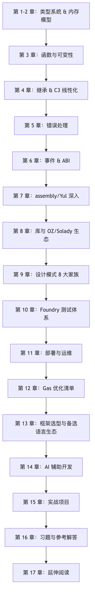
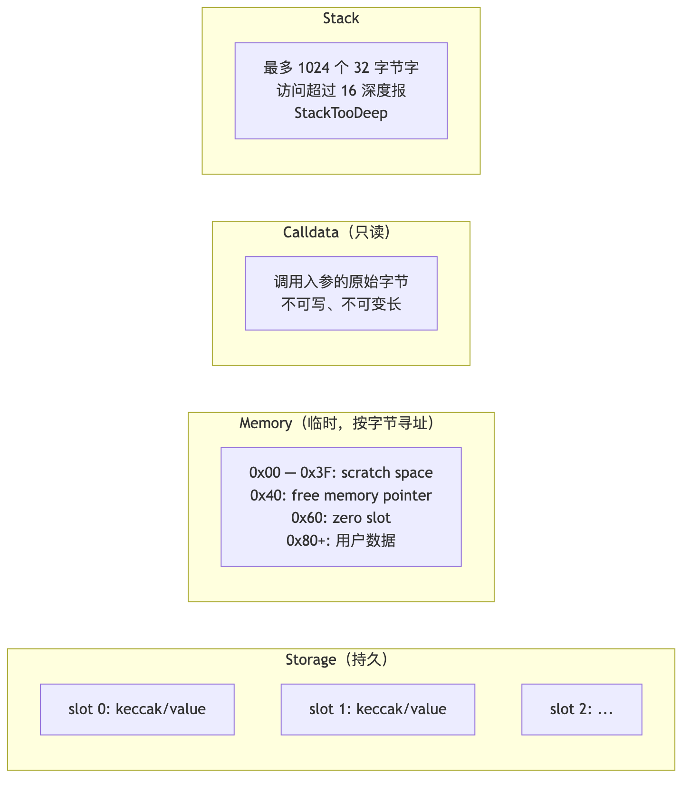
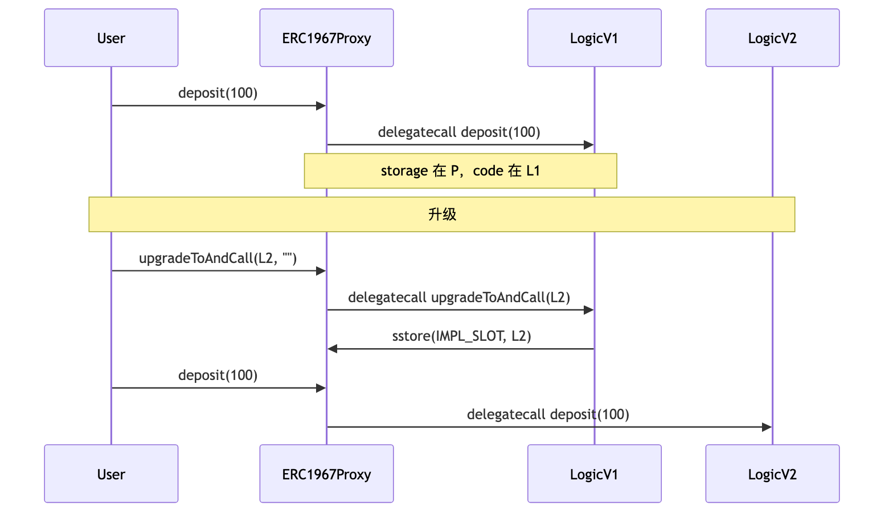
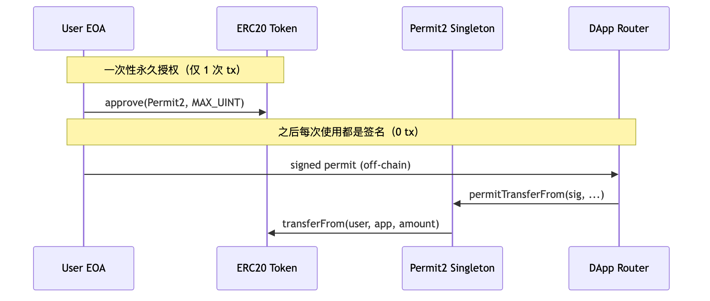
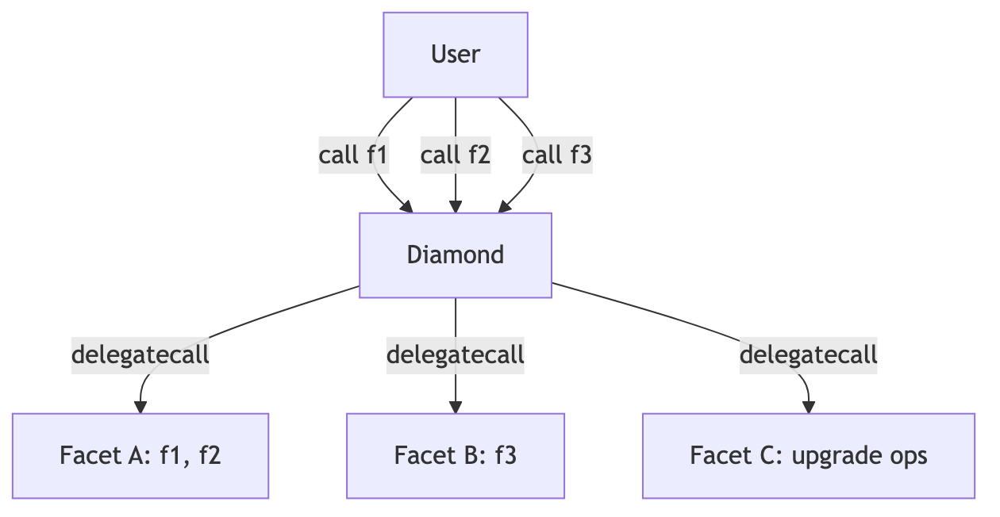
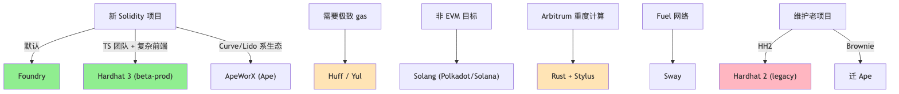

前置：模块 03（EVM 执行模型、storage 布局、gas 计量）。完成后你能读懂 Uniswap V4 / Aave V4 / Morpho / Lido 源码、为之写补丁与不变量测试，并对每一行代码说出它会编译成什么 opcode、写到哪个 slot、为什么不能换序。
版本基线：Solidity 0.8.28（EVM target = cancun）、forge-std v1.9.5、OpenZeppelin Contracts v5.5.0、Solady v0.1.26。汇编 TSTORE/TLOAD 在 0.8.24+ 可用，transient 高层语法在 0.8.29+ 才落地（仅值类型，1.7 节示例独立标注 0.8.29）。0.8.28–0.8.33 的 via_ir = true 有清空高危 bug（2026-02-11 披露），本仓库默认 via_ir = false，生产建议升 0.8.34+。

四条验收线：① 见任何合约即能画出 storage layout 与 ABI；② 见攻击场景即能归类（重入 / 溢出 / 经济攻击 / 升级风险 / 签名重放 / front-run）并给修复；③ 接到「砍 30% gas」要求，能在 storage 打包 / SSTORE2 / Solady / 汇编中挑工具；④ 写出 NatSpec 完整、不变量测试到位、storage 文档化、升级路径无歧义的代码。
先看一段会让任何代理合约崩盘的代码：
// V1 实现
contract TokenV1 { uint256 totalSupply; mapping(address => uint256) balanceOf; }
// V2「热心」开发者把新字段加在前面
contract TokenV2 { address newOwner; uint256 totalSupply; mapping(address => uint256) balanceOf; }
升级后，proxy 的 slot 0 仍然是上一版的 totalSupply，但 V2 把它解释成 newOwner——balanceOf 错位、totalSupply 凭空变成某个地址，资产瞬间归零。问题不在语法，而在 Solidity 把状态变量按声明顺序排进 32 字节的 storage slot，编译器没记你的名字，只数字节。
要预测、调试、升级合约，就必须能把任何 .sol 文件翻译成 slot 表——这正是本章的目的。语法只是壳，真正决定行为的是底层 layout。
keccak256/ECDSA 以 256 位为操作单位，EVM 选同样的字宽避免拆位运算。代价是存一个 bool 也烧 32 字节 SSTORE——除非编译器把它和邻居打包到同一 slot。

类比：storage 像硬盘（贵、慢、持久）；memory 像 RAM（中价、快、tx 内）；calldata 像只读 ROM（便宜、最快、不可改）；stack 像 CPU 寄存器（极快、容量有限）。
| 类型 | 字节数 | 说明 | 默认值 | 关键陷阱 |
|---|---|---|---|---|
bool |
1 | 真假 | false |
不是 1 bit！打包时占整字节 |
int8 ~ int256 |
1 ~ 32 | 有符号整数（步长 8） | 0 | 0.8.x 默认 checked，溢出 panic 0x11 |
uint8 ~ uint256 |
1 ~ 32 | 无符号整数 | 0 | 同上；type(uint256).max 是 2^256 - 1 |
address |
20 | EOA 或合约地址 | 0x0 |
address 不能 .transfer；要 address payable |
address payable |
20 | 可收 ETH 地址 | 0x0 |
OZ v5 起 Address.sendValue 是更安全的接口 |
bytes1 ~ bytes32 |
1 ~ 32 | 定长字节数组 | 0x00... | 与 uint<M> 不同：bytes 是大端补零 |
enum |
1（最多 256 项） | 枚举 | 第 0 项 | 越界赋值 panic 0x21 |
function (内部) |
8 | 函数指针 | 报 panic 0x51 | internal 函数指针 = (合约地址, 函数 ID) |
function (外部) |
24 | address + selector(4) |
同上 | external 函数变量打包：address(20) + selector(4) |
陷阱深度框 #1：bool 不是 bit
contract BoolPacking {
bool public a; // slot 0, offset 0, 占 1 字节
bool public b; // slot 0, offset 1, 占 1 字节
// slot 0 还剩 30 字节
uint240 public c; // slot 0, offset 2, 占 30 字节，刚好填满
bool public d; // slot 1, offset 0, 新开一个 slot
}
要 1 bit 的存储，请用 OZ 的 BitMaps（位图）或自己用位运算。
引用类型必须显式声明 storage / memory / calldata：
function processOrders(
Order[] calldata orders, // 推荐：只读、不复制、最便宜
uint256[] memory tempBuffer, // 函数内临时使用
Order storage firstOrder // 从外部 mapping/数组借的引用
) external { /* ... */ }
规则：
calldata，不要用 memory（除非你要修改）；memory 或 storage，看是否要持久化修改；storage 赋给 memory 是复制（烧 gas）；赋给 storage 是指针别名（几乎免费）。struct User { uint256 balance; uint256 lastSeen; }
mapping(address => User) public users;
function bad() external {
User memory u = users[msg.sender]; // 复制：读两个 slot 到 memory
u.balance += 100; // 改 memory，不改链上状态！
}
function good() external {
User storage u = users[msg.sender]; // 别名：指针
u.balance += 100; // 真改链上状态
}
状态变量按声明顺序铺到 slot 0、1、2…。每个变量从当前 slot 的下一个空 byte 开始放（左低位、右高位），如果当前 slot 剩余空间不够它，则换新 slot。继承的父合约状态变量在子合约前面排。immutable / constant 不参与 slot 分配，值反映在 deployedBytecode（编译期内联 / runtime code 区）而非 forge inspect storage-layout 的 JSON 输出。
来推导一个真实例子：
contract Layout {
uint128 a; // slot 0, offset 0, 占 16 字节
uint128 b; // slot 0, offset 16, 占 16 字节 → slot 0 满
uint256 c; // slot 1（256 位放不进剩余 0 字节）
bool d; // slot 2, offset 0, 占 1 字节
address e; // slot 2, offset 1, 占 20 字节
uint64 f; // slot 2, offset 21, 占 8 字节 → 用了 29/32
uint16 g; // slot 2, offset 29, 占 2 字节 → 用了 31/32
uint8 h; // slot 2, offset 31, 占 1 字节 → slot 2 满（32/32）
uint256 i; // slot 3
}
forge inspect Layout storage-layout 输出：
{
"storage": [
{"label":"a","offset":0,"slot":"0","type":"t_uint128"},
{"label":"b","offset":16,"slot":"0","type":"t_uint128"},
{"label":"c","offset":0,"slot":"1","type":"t_uint256"},
{"label":"d","offset":0,"slot":"2","type":"t_bool"},
{"label":"e","offset":1,"slot":"2","type":"t_address"},
{"label":"f","offset":21,"slot":"2","type":"t_uint64"},
{"label":"g","offset":29,"slot":"2","type":"t_uint16"},
{"label":"h","offset":31,"slot":"2","type":"t_uint8"},
{"label":"i","offset":0,"slot":"3","type":"t_uint256"}
]
}
4 个 slot（反例写法需 9 个 slot）。每多一个 slot 部署多花 ~20000 gas（首次 SSTORE）+ 运行时多一笔 SLOAD（冷读 2100 gas）。
mapping(K => V)：占一个 slot 但 slot 本身不存东西（永远是 0）。元素 m[k] 的位置是 keccak256(abi.encode(k, slot))。
contract Mapping {
uint256 a; // slot 0
mapping(address => uint256) balances; // slot 1（占位）
// balances[0xAAA] 的位置 = keccak256(abi.encode(0xAAA, 1))
}
vm.load(address, keccak256(abi.encode(key, 1))) 直接读链上 mapping 值——审计与状态恢复时有用。
嵌套 mapping：m[k1][k2] 在 keccak256(abi.encode(k2, keccak256(abi.encode(k1, slot))))，每嵌套一层多算一次 keccak。
动态数组 T[]：
length；keccak256(slot) 开始连续铺，每个元素按其类型大小占（小类型仍 packing）。uint256[] arr; // slot 5
// arr[0] 在 keccak256(5)，arr[1] 在 keccak256(5)+1，...
bytes / string：长度 ≤ 31 字节时打包进 slot 自身（最低字节存 length*2）；长度 > 31 字节时 slot 存 length*2+1，数据从 keccak256(slot) 开始连续铺。
静态数组 T[N]：连续铺 N 个 T，仍 packing，不存 length。
零运行时开销的类型别名，提供编译期类型安全：
type USD is uint256;
type WEI is uint256;
type Seconds is uint256;
function buy(USD amount, Seconds deadline) external { /* ... */ }
// 调用方必须显式 wrap，编译器拒绝 uint256 ↔ USD 隐式转换
USD price = USD.wrap(100);
uint256 raw = USD.unwrap(price);
// 加自定义运算（using for）
function add(USD a, USD b) pure returns (USD) {
return USD.wrap(USD.unwrap(a) + USD.unwrap(b));
}
using {add as +} for USD global; // 0.8.19+：操作符重载
适合：单位类型（USD/WEI/Seconds/Block）、ID 类型（UserId/PoolId/OrderId）。ABI 里它退化为底层类型（uint256），只在「编译期单位安全」收益大于「ABI 可读性损失」时使用。
EIP-1153（Cancun, 2024-03）引入 TSTORE / TLOAD：事务内有效、事务结束自动清零，gas 仅 100/op（与 warm storage 持平）。
| 数据区 | 持久性 | gas（写） | gas（读） | 对应 opcode |
|---|---|---|---|---|
| storage | 永久 | SSTORE 22100（冷）/ 5000（热） | SLOAD 2100/100 | SSTORE/SLOAD |
| transient storage | 当前 tx | 100 | 100 | TSTORE/TLOAD |
| memory | 当前 call frame | 3 + 二次方增长 | 3 | MSTORE/MLOAD |
| calldata | 只读 | - | 2-3 | CALLDATALOAD |
Solidity 0.8.24 起支持以汇编访问 TSTORE/TLOAD；0.8.29 起支持 高层语法（仅值类型）：
以下高层 transient 语法需要 Solidity ≥ 0.8.29（仅限值类型）；其他章节示例使用本模块默认的 0.8.28，需要 transient 时建议用 TSTORE/TLOAD 汇编版（见下文），它在 0.8.24+ 全版本都能用。
// SPDX-License-Identifier: MIT
pragma solidity 0.8.29;
contract WithTransient {
uint256 transient counter; // 0.8.29+ 高层语法（值类型）
function bump() external returns (uint256) {
counter = counter + 1; // 编译为 TSTORE
return counter; // 编译为 TLOAD
}
}
汇编版（兼容 0.8.24+，含本模块默认的 0.8.28）：
bytes32 constant SLOT = keccak256("MyContract.lock");
function _lock() internal {
assembly { tstore(SLOT, 1) }
}
function _unlock() internal {
assembly { tstore(SLOT, 0) }
}
function _isLocked() internal view returns (bool b) {
assembly { b := tload(SLOT) }
}
经典用例：ReentrancyGuard 锁。OZ v5.2+ 的 ReentrancyGuardTransient 把每次调用开销从 ~5000 gas 降到 ~200。Uniswap V4 hooks 大量使用 transient storage 缓存 swap 中间状态。
踩坑：transient 不跨外部调用清零（同 tx 子调用仍能读到上层值），所以「锁」可行，「缓存」要防污染。编译器不会自动清零 transient 变量——需在函数末尾手动写 0 或依赖 tx 结束（注意嵌套 call）。
模式 A：reentrancy lock
modifier nonReentrant() {
assembly { if tload(0) { revert(0, 0) } tstore(0, 1) }
_;
assembly { tstore(0, 0) }
}
模式 B：跨函数调用栈传 context（Uniswap V4 hooks 主用法）
V4 的 PoolManager 在 unlock(callback) 里把 LP 操作交给 callback 处理，callback 内部需要知道当前操作的池子，transient 避免把 poolId 逐层 thread 进每个调用：
contract PoolManager {
bytes32 constant SLOT_LOCKER = keccak256("v4.locker");
function unlock(bytes calldata data) external returns (bytes memory) {
bytes32 slot = SLOT_LOCKER;
assembly { tstore(slot, caller()) } // 记录谁解锁的
bytes memory result = ICallback(msg.sender).callback(data);
assembly { tstore(slot, 0) }
return result;
}
function modifyLiquidity(PoolKey calldata key, ...) external {
bytes32 slot = SLOT_LOCKER;
address locker;
assembly { locker := tload(slot) }
require(msg.sender == locker, "must be inside unlock");
// ... 真正的逻辑
}
}
模式 C：累积变量（multicall 净结算）
multicall 调用多次 swap，每次把 delta 累加到 transient slot，结尾读一次净结算。比 storage 累加每次省 ~5000 gas。
function swap(int256 delta) external {
bytes32 slot = keccak256(abi.encode("delta", msg.sender));
assembly {
let cur := tload(slot)
tstore(slot, add(cur, delta))
}
}
function settle() external {
bytes32 slot = keccak256(abi.encode("delta", msg.sender));
int256 net;
assembly { net := tload(slot) tstore(slot, 0) }
if (net > 0) IERC20(token).transferFrom(msg.sender, address(this), uint256(net));
else if (net < 0) IERC20(token).transfer(msg.sender, uint256(-net));
}
模式 D：批量授权 cache（Permit2 风格）
首次调用 Permit2 验证签名，把 user→spender→amount 的临时授权写到 transient；同 tx 内后续调用直接 tload，免重新 ECDSA 验证。
安全规则：
forge inspect storage-layout 等价工具：transient layout 全靠开发者维护，审计时逐处 review tload/tstore。Cancun 的 MCOPY（EIP-5656）取代了逐 32 字节 MLOAD + MSTORE 的复制方式：
| 操作 | Cancun 前 | Cancun 后（MCOPY） |
|---|---|---|
| 复制 32 字节 | MLOAD(3) + MSTORE(3) = ~6 gas | MCOPY(3) + 3 = 6 gas（持平） |
| 复制 1 KB | ~10000 gas | ~3300 gas |
| 复制 10 KB | ~100k gas | ~33k gas（省 80%） |
Solidity 自动用 MCOPY：0.8.24 仅支持 Yul 内联汇编；0.8.25+ 编译器自动用于 ABI encode/decode、bytes/string 复制、数组复制。EVM target 设为 cancun 即生效，不需要改代码。
显式 mcopy（仅在写极致优化的库时用）：
function copyBytes(bytes memory src) internal pure returns (bytes memory dst) {
dst = new bytes(src.length);
assembly { mcopy(add(dst, 0x20), add(src, 0x20), mload(src)) }
}
验证生效：forge inspect <Contract> assembly | grep -c MCOPY，不为 0 即已启用。
交易类型 0x01，允许发送方预声明访问的 address 与 storage slot，冷读 2100 gas 降到热读 100 gas（每槽省 ~2000）。
# cast 自动推导 access list 并构造 0x01 tx
cast send --access-list 0x... "swap(uint256)" 100 --rpc-url $RPC --private-key $PK
注意：access list 本身付费（每 address 2400、每 slot 1900），跨合约调用至少 3 个槽才划算。Solidity 代码无需改动，纯 tx 构造层优化。cast send --access-list 会用 eth_createAccessList 自动推导 access list；forge script --slow 仅用于发送间隔等待，不会自动加 access list。
EVM memory 是按字节寻址的线性空间（非稀疏 keyed map），编译器约定布局：
0x00 - 0x3F : scratch space（临时计算用，hash 输出等）
0x40 - 0x5F : free memory pointer（指向下一块空闲 memory）
0x60 - 0x7F : zero slot（永远是 0，给空 bytes/string 用）
0x80 - ... : 用户数据（动态分配）
编译器从 0x40 读指针，分配后往后挪。memory 只增不减，不能释放。汇编里手动写 memory 必须维护 0x40：
function alloc(uint256 size) internal pure returns (bytes memory ptr) {
assembly {
ptr := mload(0x40) // 读当前 free pointer
mstore(ptr, size) // 在前 32 字节写 length
mstore(0x40, add(ptr, add(size, 32))) // 推进 free pointer
}
}
陷阱：汇编里直接 mstore(0x80, ...) 不更新 0x40，下一行 Solidity 分配 memory 时会覆盖写入。
函数调用在 EVM 层：
calldata = bytes4(keccak256("functionName(type1,type2,...)")) || abi.encode(arg1, arg2, ...)
─────────────── 4 字节 selector ────────────── ┃ ──── 参数区 ────
函数选择器 = 函数签名（无空格、无返回值、无变量名、无 storage 位置）的 keccak256 前 4 字节：
transfer(address,uint256) → keccak256("transfer(address,uint256)")
→ 0xa9059cbb...
→ selector = 0xa9059cbb
参数编码规则（简化）：
uint, address, bool, bytes32, 静态数组）：直接 32 字节槽（左/右补零按规则）bytes, string, 动态数组、T[]）：举例 foo(uint256, bytes, address) 调用 foo(0x42, 0xCAFE, 0xAAAA)：
offset 0x00: selector (4 bytes)
offset 0x04: 0x0000...0042 ← head: uint256
offset 0x24: 0x0000...0060 ← head: bytes 的 offset = 0x60
offset 0x44: 0x0000...AAAA ← head: address
offset 0x64: 0x0000...0002 ← tail: bytes 的 length = 2
offset 0x84: 0xCAFE0000... ← tail: bytes 数据（左对齐补零到 32 字节）
理解此布局可：手动构造 delegatecall/call 的 calldata；在汇编里跳过 ABI 解码开销直接读字段；调试 vm.expectCall/cast 4byte-decode。
Solidity 提供的 ABI 工具：
abi.encode(a, b) // 标准 ABI 编码（每个字段 32 字节对齐）
abi.encodePacked(a, b) // 紧凑编码（每字段按真实大小，不补零）→ 容易碰撞，仅做 hash 用
abi.encodeWithSelector(IERC20.transfer.selector, to, amt)
abi.encodeCall(IERC20.transfer, (to, amt)) // 0.8.11+，类型安全，推荐
abi.decode(data, (uint256, bytes)) // 解码
陷阱：abi.encodePacked(a, b) 当 a、b 都是动态类型时会碰撞（("ab","cd") 与 ("a","bcd") 输出相同）。签名 input 用 abi.encode，不用 packed。
用于链下签名链上验证，核心公式：
sign(keccak256("\x19\x01" ‖ domainSeparator ‖ hashStruct(message)))
其中：
// 1. domain separator（绑定 dapp、chain、合约）
bytes32 DOMAIN_TYPEHASH = keccak256(
"EIP712Domain(string name,string version,uint256 chainId,address verifyingContract)"
);
bytes32 domainSeparator = keccak256(abi.encode(
DOMAIN_TYPEHASH,
keccak256(bytes(name)),
keccak256(bytes(version)),
block.chainid,
address(this)
));
// 2. struct hash（绑定具体消息）
bytes32 PERMIT_TYPEHASH = keccak256(
"Permit(address owner,address spender,uint256 value,uint256 nonce,uint256 deadline)"
);
bytes32 structHash = keccak256(abi.encode(
PERMIT_TYPEHASH, owner, spender, value, nonce, deadline
));
// 3. final digest
bytes32 digest = keccak256(abi.encodePacked("\x19\x01", domainSeparator, structHash));
address signer = ecrecover(digest, v, r, s);
设计要点：chainId 防跨链重放；verifyingContract 防同链不同合约重放；nonce 防消息重放（OZ Nonces 自增）；deadline 防永久有效。OZ v5 的 EIP712.sol + ERC20Permit.sol 已封装，本模块 MyToken.sol 直接继承。
| 关键字 | 谁能调 | ABI 暴露 | 编译后实现 |
|---|---|---|---|
public |
任何人（外部 + 内部） | 是 | 既有 ABI 入口又有内部 dispatcher |
external |
仅外部 tx 或 this.f() |
是 | 仅 ABI 入口；省掉内部 dispatcher |
internal |
本合约 + 子合约 | 否 | 等同于 C++ protected |
private |
仅本合约 | 否 | 子合约也不能调 |
优先 external：public 函数引用类型参数必须复制到 memory，external 直接读 calldata，省 200~上千 gas。public 状态变量的隐式 getter 是 external-like 的，但不能从子合约 super.varName() 访问（getter 是合成的，不是真函数）。
| 关键字 | 含义 | 链下可调？ |
|---|---|---|
| 默认 | 可读可写 | 是（要 tx 上链） |
view |
不写 storage，可读 | 是（staticcall，免 gas） |
pure |
既不读也不写 storage | 同上 |
payable |
可接收 ETH | 同上 |
view 不是真保证不写：仅编译期检查；目标合约的 view 若用汇编绕过限制仍可写状态，审计时追每个外部调用。pure 额外不能读 block.*、msg.*、tx.*、其他合约状态。
修饰符是代码注入，_ 表示函数体展开位置：
modifier onlyOwner() {
if (msg.sender != owner) revert NotOwner();
_; // 函数体在这里展开
// 后置代码（很少用）
}
modifier nonReentrant() {
if (_locked) revert Reentrant();
_locked = true;
_;
_locked = false;
}
陷阱深度框 #2：modifier 里写 return 是反模式
modifier maybeSkip(bool skip) {
if (skip) return; // ⚠ 编译通过，但函数体不执行、返回值全是默认零值——几乎一定是 bug
_;
}
要中止只能 revert（不调用 _ 会导致返回值为默认值）。反模式：在 modifier 里写状态变更（重入锁、Pausable 除外）。OZ v5 已有 Ownable / AccessControl / Pausable / ReentrancyGuard，不要重发明。
OZ v5 ERC20 继承 Context, IERC20, IERC20Metadata, IERC20Errors，加 ERC20Permit / ERC20Burnable / AccessControl 后是 8 层菱形继承。super._update() 究竟调谁？写错了升级时 storage 错位、虚函数调到老版——本章把 C3 算法和 storage 排布当成一道证明题来做。
多重继承用 C3 线性化（与 Python MRO 相同）决定 super.foo() 调谁。
菱形继承示例：
A
/ \
B C
\ /
D
contract A { function foo() public virtual returns (string memory) { return "A"; } }
contract B is A { function foo() public virtual override returns (string memory) { return "B"; } }
contract C is A { function foo() public virtual override returns (string memory) { return "C"; } }
contract D is B, C {
function foo() public override(B, C) returns (string memory) {
return super.foo(); // 谁？
}
}
C3 推导步骤：
L[A] = [A]
L[B] = [B, A]
L[C] = [C, A]
L[D] = [D] + merge(L[B], L[C], [B, C])
= [D] + merge([B,A], [C,A], [B,C])
第 1 步：取 [B,A] 的 head = B。B 不在其他列表的 tail，选 B。
余下：merge([A], [C,A], [C])
第 2 步：取 [A] 的 head = A。A 在 [C,A] 的 tail，跳过。
取 [C,A] 的 head = C。C 不在其他列表的 tail，选 C。
余下：merge([A], [A], [])
第 3 步：取 [A]，A 不在任何 tail，选 A。
L[D] = [D, B, C, A]
所以 D.foo() 里 super.foo() 调的是 C 的 foo。is B, C 与 is C, B 顺序不同行为可能不同。OZ 文档明确建议继承顺序：
// OZ ERC20Burnable 文档建议：
contract MyToken is ERC20, ERC20Burnable, ERC20Permit, AccessControl { ... }
// ↑ 基类在前，扩展在后
virtual（OZ v5 所有可覆盖函数都已标注）override；菱形继承要 override(A, B, ...) 列出internal → public），不能反向view/pure/payable 以外的组合abstract contract Base {
function priceOf(address token) public view virtual returns (uint256); // 无函数体
function someConcrete() external pure returns (uint256) { return 42; }
}
抽象合约有未实现函数，不能部署。接口无函数体、无状态变量、无构造器，只能有 function/event/error/type。与外部协议交互永远 import 接口而不是实现（OZ v5 提供 IERC20/IERC721/IERC4626/IERC1271 等）。
可升级合约的 storage 兼容性基于继承顺序，父合约 slot 永远在子合约前面。给父合约加新字段须预留 __gap：
contract BaseV1 {
uint256 a;
uint256 b;
uint256[50] private __gap; // 预留 50 个 slot
}
contract BaseV2 {
uint256 a;
uint256 b;
uint256 c; // 新加，吃掉 gap[0]
uint256[49] private __gap; // gap 缩成 49
}
OZ v5 起把状态变量搬到 ERC-7201 namespace storage，不再依赖 gap。新合约推荐：
/// @custom:storage-location erc7201:myapp.token
struct TokenStorage {
mapping(address => uint256) balances;
uint256 totalSupply;
}
bytes32 private constant TOKEN_STORAGE = 0x...; // keccak256(...) - 1 & ~0xff
function _getStorage() private pure returns (TokenStorage storage $) {
assembly { $.slot := TOKEN_STORAGE }
}
namespace storage 完全隔离父子合约，升级时无需担心父合约加字段破坏子合约布局。
错误处理决定三件事：用户在钱包里看到什么、前端能否解码原因、字节码占多少字节。require(c, "ERC20: transfer amount exceeds balance") 把这串字符串编进 bytecode、每次调用从 storage 读出来——这就是 OZ v5 整个库迁到自定义错误的原因。
// 1. require（旧风格）
require(amount > 0, "amount must be positive"); // 字符串占字节码，~200-400 gas
// 2. revert + 自定义错误（推荐，0.8.4+）
error InvalidAmount(uint256 provided);
if (amount == 0) revert InvalidAmount(amount); // 4 字节 selector，省 ~30% runtime gas
// 3. assert（仅内部不变量）
assert(invariant); // 0.8.x 起只触发 Panic(0x01)，不再烧光 gas
自定义错误优势：字节码更小（selector 4 字节 vs 字符串逐字节）；参数机器可读，前端直接取值；前端按需翻译 selector。
OZ v5 全面切换自定义错误（IERC20Errors、IERC721Errors 等）：
error ERC20InsufficientBalance(address sender, uint256 balance, uint256 needed);
error ERC20InvalidApprover(address approver);
error AccessControlUnauthorizedAccount(address account, bytes32 role);
Panic 是编译器自动插入的检查失败：
| 代码 | 触发条件 | 修复 |
|---|---|---|
| 0x00 | 通用 panic | 不应该发生 |
| 0x01 | assert(false) |
检查不变量逻辑 |
| 0x11 | 算术下/上溢（unchecked 块外） |
用 unchecked 或换更大类型 |
| 0x12 | 除以 0 或对 0 取模 | 调用前检查 |
| 0x21 | 越界值赋给 enum | 检查 enum 范围 |
| 0x22 | 错误编码的 storage byte 数组（不应手动写） | 不要手动改 storage |
| 0x31 | pop() 空数组 |
调用前判空 |
| 0x32 | 数组越界 | 检查 length |
| 0x41 | 分配过多 memory（>= ~1GB）或长度溢出 | 限制循环或数组大小 |
| 0x51 | 调用未初始化的 function 类型变量 |
初始化或检查非空 |
try otherContract.foo(arg) returns (uint256 r) {
// 调用成功，r 是返回值
} catch Error(string memory reason) {
// require/revert("...") 的字符串原因
} catch Panic(uint256 code) {
// panic 编号
} catch (bytes memory data) {
// 自定义错误或低层 revert，data 是 ABI 编码（含 selector）
}
只能用于：外部合约调用、new Contract(...) 创建、低层 call/delegatecall/staticcall。同一合约内部函数的 revert 直接冒泡，不能 catch。
陷阱深度框 #3：catch 默认仍然消耗 gas
try x.foo{gas: 50_000}() {} catch {} // 限制 50k gas
不限 gas 时被调方可耗尽 63/64 的 gas，让 catch 后无力继续。OZ Address.functionCall 建议显式限 gas。
error InsufficientBalance(address account, uint256 needed, uint256 available);
error TransferFailed(address from, address to, bytes4 reason);
// reason 可以是另一个 error 的 selector
function withdraw(uint256 amt) external {
if (balances[msg.sender] < amt) {
revert InsufficientBalance(msg.sender, amt, balances[msg.sender]);
}
(bool ok, bytes memory ret) = msg.sender.call{value: amt}("");
if (!ok) revert TransferFailed(address(this), msg.sender, bytes4(ret));
}
error 解码（链下）：
// viem
const error = decodeErrorResult({
abi: tokenAbi,
data: '0xa1b2c3...' // 4 字节 selector + ABI 编码参数
});
// error = { errorName: "InsufficientBalance", args: [address, BigInt, BigInt] }
反模式：error as control flow：每次外部调用 ~700 gas，用 try-catch 做分支是把 if 写贵 100 倍。error 是「不可恢复」状态，控制流用 if/else。
OZ v5 的 IERC6093 标准化错误（ERC20/ERC721/ERC1155）：
interface IERC20Errors {
error ERC20InsufficientBalance(address sender, uint256 balance, uint256 needed);
error ERC20InvalidSender(address sender);
error ERC20InvalidReceiver(address receiver);
error ERC20InsufficientAllowance(address spender, uint256 allowance, uint256 needed);
error ERC20InvalidApprover(address approver);
error ERC20InvalidSpender(address spender);
}
新合约直接 import {IERC20Errors} from "@openzeppelin/contracts/interfaces/draft-IERC6093.sol" 复用。Etherscan、viem、wagmi 自动识别并展示这些 error。
所有 public/external 函数都应有 NatSpec——编译器把它编进 ABI metadata，钱包签名 UI 直接展示。
| 标签 | 用途 | 适用对象 |
|---|---|---|
@title |
合约/接口标题 | contract / interface |
@author |
作者署名 | contract / interface |
@notice |
给最终用户看的描述（钱包 UI 会展示） | 所有 |
@dev |
给开发者看的实现细节 | 所有 |
@param |
参数说明 | function / event / error |
@return |
返回值说明 | function（多返回值要逐个写） |
@inheritdoc |
从父合约继承文档 | function（override 时极其有用） |
@custom:xxx |
自定义标签 | 所有（OZ 用 @custom:storage-location 标记 ERC-7201） |
/// @title 收益金库 v1
/// @author chuwuyo
/// @notice 把 USDC 存进来，赚取 Aave 利息
/// @dev 继承 ERC4626，重写 _withdraw 收 0.5% 提现费
/// @custom:security-contact security@example.com
contract YieldVault is ERC4626 {
/// @notice 单次提现的费率，单位 BPS（10000 = 100%）
/// @dev immutable，构造时确定
uint256 public immutable FEE_BPS;
/// @notice 当用户提现金额不足支付费用时抛出
/// @param requested 请求提现的资产数量
/// @param fee 应收的费用
error InsufficientForFee(uint256 requested, uint256 fee);
/// @notice 提现资产，扣除费用后转给 receiver
/// @param assets 提现的底层资产数量（注意是 assets 不是 shares）
/// @param receiver 收款人地址
/// @param owner 份额持有者
/// @return shares 实际烧毁的份额数量
/// @inheritdoc ERC4626
function withdraw(uint256 assets, address receiver, address owner)
public
override
returns (uint256 shares)
{ /* ... */ }
}
forge doc --build # 生成 docs/ 目录
forge doc --serve --port 4000 # 本地预览（启动 mdbook）
forge doc 按合约/继承层级生成 mdBook 文档站点（OZ、Solady、Aave V3 的公开文档均用此生成）。CI：forge doc --build && cd docs && mdbook build 推 GitHub Pages。
编译器内置 SMT + Horn 求解器，自动证明 require/assert 在所有输入下成立。免费零配置，能找到 fuzz 漏掉的边界 bug。
foundry.toml：
[profile.default]
model_checker = { engine = "all", timeout = 10000, targets = ["assert", "underflow", "overflow", "divByZero"] }
或者在合约里逐文件启用：
// SPDX-License-Identifier: MIT
pragma solidity 0.8.28;
/// @custom:smtchecker { engine: "all", timeout: 10000 }
contract Counter {
uint256 public count;
function inc() external { count += 1; }
function dec() external {
assert(count > 0); // SMTChecker 会尝试证明这个永远成立或找到反例
count -= 1;
}
}
| 引擎 | 全称 | 擅长 | 限制 |
|---|---|---|---|
| BMC | Bounded Model Checking | 单函数内的所有路径、内联调用 | 不擅长循环（要给上限） |
| CHC | Constrained Horn Clauses | 跨函数的状态不变量、循环 | 慢，可能 timeout |
engine = "all" 同时跑两者。
assert(...) 是否永远成立pragma solidity 0.8.28;
contract Counter {
uint256 public count;
function dec() external {
require(count > 0); // SMTChecker 把它当 assumption
unchecked { count -= 1; }
assert(count >= 0); // 自动证明 ✓
}
function unsafeDec() external {
unchecked { count -= 1; } // 没 require
assert(count >= 0); // SMTChecker 报错：count == 0 时减 1 下溢
}
}
输出：
Warning: CHC: Assertion violation happens here.
Counterexample:
count = 0
call unsafeDec()
SMTChecker 是数学证明（非随机试值），跨多函数调用序列、外部合约调用、复杂数据结构时会 timeout。
| 工具 | 路径 | 何时用 |
|---|---|---|
| SMTChecker | 编译器内置，免配置 | 写代码时随手开，等同高级 lint |
| Halmos | a16z，外部，Foundry 集成 | 复用 fuzz 测试当作 spec，做 stateful 验证 |
| Certora Prover | 商业（学术免费） | 高价值 DeFi 协议（Aave、Compound、Uniswap V4 都用） |
推荐路径：CI 默认开 SMTChecker targets = ["assert"] → 关键不变量加 Halmos（章节 10.10）→ 上 mainnet 大协议跑 Certora。
storage 一字节 SSTORE 5000+ gas，一条 LOG3 同样大小不到 1500——前端能扫的状态用 event，链上要读的才用 storage。这条经验法则就是本章。
LOG0~LOG4 对应 0~4 个 topic，event 声明编译为 LOGN：
event Transfer(address indexed from, address indexed to, uint256 value);
// topic1 topic2 data
// topic0 = keccak256("Transfer(address,address,uint256)")
topic 数量限制：4 个。其中 topic0 永远是事件签名 hash，所以 indexed 字段最多 3 个。
gas：LOGN = 375 + 8×bytes(data) + 375×N，比 SSTORE（22100/5000）便宜一个数量级。「可链下索引但不需链上读取」的数据用 event 代替 storage。
event LogString(string indexed message);
emit LogString("hello"); // topic1 = keccak256("hello")，"hello" 原文不进 log
string/bytes/动态数组作为 indexed 字段，topic 里存 keccak256(data)，原文不进日志。前端只能知道明文自行 hash 匹配，或增加一个非 indexed 字段保留原文。OZ ERC20 Transfer：addresses indexed，value 非 indexed（value 需链下聚合）。
event Foo(uint256 a) anonymous;
匿名事件不带 topic0（无签名 hash），最多 4 个 indexed 字段，但订阅者需用其他特征过滤。极少用。
业务代码 99% 不需要写汇编。但 OZ MerkleProof._efficientHash、Solady SafeTransferLib、Uniswap V4 的 transient lock 全是汇编块；不读懂它们，你的审计报告止步于「调了某库」。本章目的是让你能改、能审、能在必要时手写一段不会自爆的 Yul。
Yul 是 Solidity 的 IR 兼内联汇编语法，比 EVM opcode 多了局部变量（let x := ...）、函数、if/switch/for 控制流，但无类型系统——一切是 256 位字，一对一映射到 EVM opcode。
function add(uint256 a, uint256 b) external pure returns (uint256 c) {
assembly {
c := add(a, b) // 把 a + b 赋给返回变量 c
if iszero(c) { revert(0, 0) } // c == 0 时 revert
}
}
规则：Solidity 变量在 assembly 里直接可访问（赋值用 :=）；赋值给命名返回变量即可，不需 return；revert(p, s) 从 memory[p..p+s] 读 revert data。
| Yul 函数 | 对应 EVM opcode | 用途 |
|---|---|---|
add(a,b) sub(a,b) mul(a,b) div(a,b) |
ADD/SUB/MUL/DIV | 算术（无溢出检查！） |
mod(a,b) addmod(a,b,N) mulmod(a,b,N) |
MOD/ADDMOD/MULMOD | 模运算 |
lt(a,b) gt(a,b) eq(a,b) iszero(a) |
LT/GT/EQ/ISZERO | 比较（返回 0/1） |
and(a,b) or(a,b) xor(a,b) not(a) shl(s,a) shr(s,a) |
位运算 | 极致优化用 |
mload(p) mstore(p,v) mstore8(p,v) |
MLOAD/MSTORE | memory 读写 |
sload(p) sstore(p,v) |
SLOAD/SSTORE | storage 读写 |
tload(p) tstore(p,v) |
TLOAD/TSTORE | transient storage（Cancun+） |
keccak256(p,s) |
KECCAK256 | hash memory[p..p+s] |
call(g,a,v,ip,is,op,os) |
CALL | 外部调用 |
staticcall(g,a,ip,is,op,os) |
STATICCALL | 只读调用 |
delegatecall(g,a,ip,is,op,os) |
DELEGATECALL | 代理执行 |
return(p,s) revert(p,s) |
RETURN/REVERT | 返回 / 回滚 |
calldataload(p) calldatacopy(dp,sp,s) calldatasize() |
CALLDATA* | 读 calldata |
caller() callvalue() chainid() |
CALLER/CALLVALUE/CHAINID | 上下文 |
ERC20 batchTransfer 的 Solidity 实现：
function batchTransfer(address[] calldata to, uint256[] calldata amt) external {
require(to.length == amt.length, "len");
for (uint256 i = 0; i < to.length; ++i) {
_transfer(msg.sender, to[i], amt[i]);
}
}
每次 to[i] 做边界检查 + calldata 解码。Solady 风格 Yul 版：
function batchTransfer(address[] calldata to, uint256[] calldata amt) external {
assembly {
// calldata 布局：
// 0x04: to 的 offset（相对 calldata 起点 + 0x04）
// 0x24: amt 的 offset
// ... 各自的 length + 数据
let toOffset := add(0x04, calldataload(0x04))
let amtOffset := add(0x04, calldataload(0x24))
let n := calldataload(toOffset)
if iszero(eq(n, calldataload(amtOffset))) { revert(0, 0) }
toOffset := add(toOffset, 0x20) // 跳过 length
amtOffset := add(amtOffset, 0x20)
for { let i := 0 } lt(i, n) { i := add(i, 1) } {
let recipient := calldataload(add(toOffset, mul(i, 0x20)))
let value := calldataload(add(amtOffset, mul(i, 0x20)))
// ... 调用内部 _transfer 的汇编版
}
}
}
实测 50 个收款人省 ~25% gas。风险：失去 checked 算术与编译器边界检查，任何手抖都是 bug。
OZ 的 MerkleProof.processProof：
function processProofCalldata(bytes32[] calldata proof, bytes32 leaf) internal pure returns (bytes32) {
bytes32 computedHash = leaf;
for (uint256 i = 0; i < proof.length; i++) {
computedHash = _hashPair(computedHash, proof[i]);
}
return computedHash;
}
function _hashPair(bytes32 a, bytes32 b) private pure returns (bytes32) {
return a < b ? _efficientHash(a, b) : _efficientHash(b, a);
}
function _efficientHash(bytes32 a, bytes32 b) private pure returns (bytes32 value) {
assembly {
mstore(0x00, a)
mstore(0x20, b)
value := keccak256(0x00, 0x40)
}
}
为什么用汇编：keccak256(abi.encode(a, b)) 复制到 memory 0x80+ 再 hash，要分配 memory 并更新 free pointer；汇编版直接用 0x00-0x3F scratch space，省 200~ gas/次，20 层 Merkle 树累计 4000+ gas。
immutable 不存 storage，编译器把值嵌入字节码（PUSH32），零 SLOAD，省 ~2100 gas（冷读）/ 100 gas（热读）。构造时确定、永不变的值都应该 immutable。
OZ v5 ReentrancyGuardTransient（简化版）：
abstract contract ReentrancyGuardTransient {
// ERC-1967-like slot derivation
bytes32 private constant REENTRANCY_GUARD_STORAGE =
0x9b779b17422d0df92223018b32b4d1fa46e071723d6817e2486d003becc55f00;
error ReentrancyGuardReentrantCall();
modifier nonReentrant() {
_nonReentrantBefore();
_;
_nonReentrantAfter();
}
function _nonReentrantBefore() private {
if (_reentrancyGuardEntered()) revert ReentrancyGuardReentrantCall();
assembly { tstore(REENTRANCY_GUARD_STORAGE, 1) }
}
function _nonReentrantAfter() private {
assembly { tstore(REENTRANCY_GUARD_STORAGE, 0) }
}
function _reentrancyGuardEntered() internal view returns (bool entered) {
assembly { entered := tload(REENTRANCY_GUARD_STORAGE) }
}
}
对比传统 ReentrancyGuard（用 storage）：
| 操作 | storage 版 | transient 版 | 节省 |
|---|---|---|---|
| 进入函数（写锁） | SSTORE 5000（热） | TSTORE 100 | 4900 |
| 退出函数（清锁） | SSTORE 5000（写 0 到非 0 退款） | TSTORE 100 | 4900 |
| 每次调用合计 | ~10000 | ~200 | ~9800 |
DEX 的每笔 swap 都 nonReentrant，节省非常可观。
// 1. 忘记更新 free memory pointer
assembly {
mstore(0x80, value) // 写了 memory 但没动 0x40
}
// 下一行 Solidity 代码：bytes memory b = "..."; 会从 0x80 开始覆盖你写的！
// 2. 用 invalid() 而不是 revert(0, 0)
assembly {
invalid() // 烧光所有 gas，用户体验极差
}
// 应该写 revert(0, 0)
// 3. 在 storage slot 上手动 keccak 算偏移然后写错
bytes32 slot = keccak256(abi.encode(key, 1));
assembly { sstore(slot, value) }
// 如果 mapping 的 slot 不是 1（继承改了顺序），数据写到错误位置
// 4. 假设 calldata 布局
assembly {
let x := calldataload(0x04)
}
// 如果你的函数是 (bytes calldata) 而不是 (uint256)，0x04 是 offset 不是 value
审计 + 测试是唯一安全网：每个 assembly 块要有专门测试覆盖正常路径 + 边界（length=0、超长、对齐错误）。
新合约的第一行不该是 pragma，是 import {ERC20} from "@openzeppelin/..."。自己实现 transferFrom 是面试题，不是生产代码——本章梳理三大库的定位差异，以及哪些工具应该混用、哪些坚决不能混。
| 库 | 哲学 | 何时选 |
|---|---|---|
| OpenZeppelin Contracts | 严谨、审计过、保守 | 默认，生产合约标准库 |
| Solady | 极致 gas 优化、激进汇编 | 性能敏感热路径 |
| Solmate | 早期 gas 优化范本 | Yearn / Sound 等仍在用 |
实战：主合约继承 OZ（ERC20/AccessControl/UUPS），热路径用 Solady 的 SafeTransferLib/FixedPointMathLib/LibBitmap。两者同名实现不要混 import（命名空间冲突）。
Ownable() 必须显式传 Ownable(msg.sender)Counters/SafeMath（0.8 内置 checked）upgradeTo 改名 upgradeToAndCall迁移：OZ 提供 @openzeppelin/wizard 自动重写大部分，但 storage layout 兼容性须手工核对。
SafeTransferLibOZ SafeERC20（简化）：
function safeTransfer(IERC20 token, address to, uint256 value) internal {
bytes memory data = abi.encodeCall(IERC20.transfer, (to, value));
bytes memory returndata = address(token).functionCall(data);
if (returndata.length > 0) {
require(abi.decode(returndata, (bool)), "ERC20: transfer failed");
}
}
Solady 版（Yul）：
function safeTransfer(address token, address to, uint256 amount) internal {
assembly {
mstore(0x14, to) // 0x10 - 0x33 存 to
mstore(0x34, amount) // 0x34 - 0x53 存 amount
mstore(0x00, 0xa9059cbb000000000000000000000000) // selector + padding
// call(gas, addr, value, in_ptr, in_size, out_ptr, out_size)
if iszero(and(or(eq(mload(0x00), 1), iszero(returndatasize())), call(gas(), token, 0, 0x10, 0x44, 0x00, 0x20))) {
mstore(0x00, 0x90b8ec18) // TransferFailed selector
revert(0x1c, 0x04)
}
mstore(0x34, 0) // 清掉 dirty memory，给后续代码用
}
}
省 ~30% gas，但可读性归零。审计过的基础合约用 Solady，应用层用 SafeERC20。
FixedPointMathLibmulDiv/sqrt/ln/exp 高性能实现，比 OZ Math.sol 快 2-5 倍，Compound/Aave 利率计算标配。
SSTORE2 / SSTORE3数据存为合约字节码而非 storage，写贵但读极便宜：
| 方式 | 写 1KB 成本 | 读 1KB 成本 |
|---|---|---|
SSTORE |
~720,000 gas（22k × 32 slot） | ~6,400 gas（200 × 32） |
SSTORE2（CREATE） |
~210,000 gas（200 gas/byte） | ~3,400 gas（EXTCODECOPY + 100/byte） |
适用：写一次读多次的大块数据（NFT metadata、配置 blob、merkle root 历史）。
API：
import {SSTORE2} from "solady/utils/SSTORE2.sol";
address pointer = SSTORE2.write(data); // 部署一个新合约，bytecode = data
bytes memory data2 = SSTORE2.read(pointer);
SSTORE3 用 CREATE2 + 固定 salt 让 pointer 可预测，省一次 storage write。
| 需求 | 推荐 |
|---|---|
| ERC20 / ERC721 / ERC1155 / ERC4626 | OZ |
| AccessControl / Ownable / Pausable | OZ |
| ReentrancyGuard | OZ（v5.2+ 用 Transient 版） |
| ERC20 转账 | Solady SafeTransferLib（生产） |
| 数学运算（mulDiv、sqrt） | Solady FixedPointMathLib |
| 大 blob 存储 | Solady SSTORE2 |
| 位图（白名单、bitmap claim） | OZ BitMaps 或 Solady LibBitmap |
| Merkle proof 验证 | OZ MerkleProof（汇编已优化） |
| EIP-712 / Permit | OZ EIP712 + ERC20Permit |
| Proxy（UUPS / Transparent / Beacon） | OZ |
| ECDSA / signature recovery | OZ ECDSA 或 Solady 同名 |
每种模式都对应一类已被打过的漏洞或一种已被压榨过的 gas。下面 12 种模式按「重入 → 资金流 → 部署 → 升级 → 授权」的因果链组织，不是平铺枚举。
先检查参数、再改状态、最后外部调用。违反 CEI 是 90% 重入漏洞的根源。
错例：
function withdraw() external {
uint256 bal = balances[msg.sender];
require(bal > 0);
(bool ok,) = msg.sender.call{value: bal}(""); // ← 外部调用先于状态更新
require(ok);
balances[msg.sender] = 0;
}
攻击者 receive() 循环调 withdraw 抽干 bank。正例（CEI）：
function withdraw() external {
uint256 bal = balances[msg.sender];
require(bal > 0);
balances[msg.sender] = 0; // ← Effects 先做
(bool ok,) = msg.sender.call{value: bal}("");
require(ok);
}
不主动给用户打钱，让他们来取。
mapping(address => uint256) public pendingWithdrawals;
function distributeRewards(address[] calldata users, uint256[] calldata amounts) external onlyOwner {
for (uint256 i = 0; i < users.length; ++i) {
pendingWithdrawals[users[i]] += amounts[i]; // 不主动转账
}
}
function claim() external {
uint256 amount = pendingWithdrawals[msg.sender];
pendingWithdrawals[msg.sender] = 0;
(bool ok,) = msg.sender.call{value: amount}("");
require(ok);
}
循环 transfer 时某个用户合约 revert 会卡死整个分发（DoS）。Pull 模式让坏邻居只能伤害自己。
确定性部署（Uniswap V3 pool、Safe wallet 的基础）：
contract VaultFactory {
event VaultDeployed(address indexed vault, IERC20 indexed asset);
function deploy(IERC20 asset) external returns (Vault v) {
bytes32 salt = keccak256(abi.encode(asset));
v = new Vault{salt: salt}(asset);
emit VaultDeployed(address(v), asset);
}
function predict(IERC20 asset) external view returns (address) {
bytes32 salt = keccak256(abi.encode(asset));
bytes32 codeHash = keccak256(abi.encodePacked(
type(Vault).creationCode,
abi.encode(asset)
));
return address(uint160(uint256(keccak256(abi.encodePacked(
bytes1(0xff), address(this), salt, codeHash
)))));
}
}
预测地址：addr = keccak256(0xff || factory || salt || keccak256(initcode))[12:]，部署前可链下预知地址。
| 模式 | upgrade 逻辑 | gas 开销 | 推荐度 |
|---|---|---|---|
| Transparent | 代理合约里 | 每次 call 多 1 SLOAD | 历史项目维护 |
| UUPS | 实现合约里 | 几乎零额外开销 | 新项目首选 |
| Beacon | 单独 Beacon 合约 | 每次多 1 SLOAD + 1 STATICCALL | 一对多场景（NFT collection） |

UUPS 的 storage layout：
ERC1967._IMPLEMENTATION_SLOT = 0x360894...（hash 槽，非 slot 0/1 这种序号槽）
ERC1967._ADMIN_SLOT = 0xb53127...（hash 槽）
你的实现合约状态变量仍从 slot 0 开始正常铺，与上述两个 hash 槽几乎不可能碰撞
ERC-1967 用特殊 slot（keccak256("eip1967.proxy.implementation") - 1）存 implementation 地址，在 keccak 域里几乎不与 storage 冲突，实现合约可从 slot 0 正常用。
升级风险清单：
uint256 改成 uint128：会破坏 packing__gap 或 ERC-7201 namespace 内追加OZ openzeppelin-foundry-upgrades 提供 Upgrades.deployUUPSProxy() + Upgrades.upgradeProxy()，自动比对 storage layout 并拒绝不安全升级。
Transparent 的 selector clash 解法：msg.sender 路由（admin 走 admin 函数，其他全部 delegatecall），代价每次多 1 SLOAD。UUPS 把 upgrade 函数放进 implementation，proxy 只做 delegatecall，不存在 selector clash。
让用户在一个 tx 里打包多次调用：
abstract contract Multicall {
function multicall(bytes[] calldata data) external returns (bytes[] memory results) {
results = new bytes[](data.length);
for (uint256 i; i < data.length; ++i) {
(bool ok, bytes memory ret) = address(this).delegatecall(data[i]);
if (!ok) {
// 把内部 revert 原因冒泡上去
assembly { revert(add(ret, 0x20), mload(ret)) }
}
results[i] = ret;
}
}
}
陷阱：delegatecall 里 msg.sender 仍是原始调用者（好事），但 msg.value 每个子调用都看到完整值——不能在 payable 子函数里累加 msg.value（1 ETH 调 5 次合约以为收到 5 ETH）。OZ v5 Multicall.sol 已修复此问题。
用 EIP-712 签名替代 approve，省一笔 tx：
// 用户离线签名（前端用 viem signTypedData）
{ owner, spender, value, nonce, deadline }
↓ 签名得 (v, r, s)
// 合约链上调用（任何人都可以 relay）
token.permit(owner, spender, value, deadline, v, r, s);
token.transferFrom(owner, spender, value);
OZ v5 ERC20Permit 已实现，本模块 MyToken.sol 直接继承。
陷阱：permit 易被 front-run。攻击者抢先用相同签名调 permit，让 transferFrom 失败（nonce 已用）。修复：把 permit + transferFrom 打包同一笔 tx（Multicall 或路由合约），不单独广播 permit。
EIP-2612 硬伤：只对内置 permit 的 token 有效（USDT、WBTC 等老 token 不支持）。Permit2 在每条主流链上都通过 CREATE2 部署在同一确定性地址（0x000000000022D473030F116dDEE9F6B43aC78BA3），把「signed approval」变成 token 自身以外的通用基础设施。
「同一地址」是部署确定性，不是跨链。每条链上的 Permit2 是独立合约，allowance / nonce 状态各链互不可见。同时 Permit2 的取舍是用户必须先把 token approve(Permit2, MAX_UINT)（一次性 onchain tx），后续才能用签名授权——这是 vs EIP-2612「token 内置 permit、零 approve」的关键区别。

两个核心子合约：
nonce + deadline，用过即销毁。为什么越来越多走 Permit2：每 token 只 approve 一次（单例共用）；所有授权有 deadline（根除「dormant infinite approval」）；不需 token 实现 permit，适用任意 ERC20。
合约接收 Permit2 转账：
import {ISignatureTransfer} from "permit2/src/interfaces/ISignatureTransfer.sol";
ISignatureTransfer constant PERMIT2 = ISignatureTransfer(0x000000000022D473030F116dDEE9F6B43aC78BA3);
function depositWithPermit2(
uint256 amount,
ISignatureTransfer.PermitTransferFrom calldata permit,
bytes calldata signature
) external {
PERMIT2.permitTransferFrom(
permit,
ISignatureTransfer.SignatureTransferDetails({to: address(this), requestedAmount: amount}),
msg.sender,
signature
);
// 此时 token 已经从 user 转到 address(this)
_mintShares(msg.sender, amount);
}
新项目（DEX 路由器、跨链桥、聚合器）应直接基于 Permit2，不要求 token 实现 EIP-2612。
Pectra 升级（2025-Q2 主网）：EOA 通过签名授权将自己的 code 设为某合约，一笔 tx 内执行合约逻辑。账户抽象的轻量版，无需 4337 bundler。
用例：batched approval+swap+stake（3 tx → 1 tx）；gas 赞助（付费者与执行者分离）；session keys（一次签名授权一段时间的动作集合）。
Solidity 工具链支持（截至 2026-04）：
vm.sign + vm.attachDelegation cheatcodes 支持 EIP-7702 授权签名SignerEIP7702（v5.5 改名，v5.4 之前叫 SignerERC7702），处理 address(this) == EOA 的签名验证signAuthorization APIEIP7702Proxy，让普通 proxy 可以被 EOA 委托安全红线：
isValidSignaturechainId = 0 是工具链最高危的字段：authorization tuple 允许 chainId = 0 表示「在任意链上生效」。攻击者一旦诱骗用户签 chainId=0 的 7702 auth，可在所有 EVM 链上重放、把 EOA 在每条链上都 delegate 到 sweeper。钱包/dApp 必须默认使用具体 chainId、显示拒绝 chainId=0。详见 05 模块 §11.4 攻击案例把合约拆成多个 facet，通过中央 dispatcher 路由 selector → facet：

Diamond Storage：每个 facet 用独立 keccak256 hash 作起点，互不冲突：
library FacetAStorage {
bytes32 constant SLOT = keccak256("diamond.facet.a.storage");
struct Layout { uint256 totalSupply; mapping(address => uint256) balances; }
function layout() internal pure returns (Layout storage l) {
bytes32 slot = SLOT;
assembly { l.slot := slot }
}
}
优势：突破 24KB 限制；selector 粒度升级/增删；多团队并行迭代。
劣势：forge inspect 无法算 Diamond storage layout；DiamondCut 缺 access control 时全合约可被劫持；每次调用多 1 SLOAD（查路由表）；storage hash 碰撞全炸。
案例：Aavegotchi（游戏合约超 24KB）、TrueUSD（早期用，后改 UUPS）。OZ v5 推 ERC-7201 + UUPS，效果接近 Diamond 但工具链友好。
新项目决策树：
合约大小 < 24KB？
├── 是 → 用 UUPS（首选）
└── 否 → 拆模块（factory 模式 / 多合约 + 路由合约）
└── 拆不了 → 才考虑 Diamond
EIP-2535 标准接口（强制实现）：
interface IDiamondCut {
enum FacetCutAction { Add, Replace, Remove }
struct FacetCut {
address facetAddress;
FacetCutAction action;
bytes4[] functionSelectors;
}
function diamondCut(FacetCut[] calldata cuts, address init, bytes calldata data) external;
}
interface IDiamondLoupe {
function facets() external view returns (Facet[] memory);
function facetFunctionSelectors(address facet) external view returns (bytes4[] memory);
function facetAddresses() external view returns (address[] memory);
function facetAddress(bytes4 selector) external view returns (address);
}
diamond-1-hardhat / diamond-foundry 是参考实现仓库，不要从零写——误删 selector 即锁死合约。
ETH 转账委托给 Escrow 合约：
// 注意：OZ v5 已移除 contracts/security/PullPayment.sol，需固定到 v4 引入：
// forge install OpenZeppelin/openzeppelin-contracts@v4.9.6
// 或自行从 v4 拷贝 PullPayment.sol + Escrow.sol 到本地维护。
import {PullPayment} from "@openzeppelin/contracts/security/PullPayment.sol";
contract Auction is PullPayment {
function bid() external payable {
if (msg.value <= currentBid) revert();
// 退款给前一个出价者（Pull 模式）
_asyncTransfer(currentBidder, currentBid);
currentBidder = msg.sender;
currentBid = msg.value;
}
}
_asyncTransfer 把钱放进 escrow，受益人调 withdrawPayments 自取，彻底隔绝 push 转账的 reentrancy 风险。
批量便宜部署完全相同合约，使用 EIP-1167 minimal proxy（"clone"）：
0x363d3d373d3d3d363d73<implementation>5af43d82803e903d91602b57fd5bf3
仅 45 字节固定 bytecode，硬编码 implementation 地址做 delegatecall。无升级能力，部署成本极低：
| 部署方式 | gas |
|---|---|
| 完整合约（如 ERC20） | 500k - 1.5M |
| ERC1967Proxy（UUPS 用） | ~150k |
| EIP-1167 minimal proxy | ~32k |
import {Clones} from "@openzeppelin/contracts/proxy/Clones.sol";
contract VaultFactory {
address public immutable IMPLEMENTATION;
constructor(address impl) { IMPLEMENTATION = impl; }
/// @notice 普通 CREATE 部署 clone
function createVault(IERC20 asset) external returns (address vault) {
vault = Clones.clone(IMPLEMENTATION);
Vault(vault).initialize(asset);
}
/// @notice CREATE2 部署 clone（地址可预测）
function createDeterministic(IERC20 asset, bytes32 salt) external returns (address vault) {
vault = Clones.cloneDeterministic(IMPLEMENTATION, salt);
Vault(vault).initialize(asset);
}
/// @notice 不部署只算地址
function predictAddress(bytes32 salt) external view returns (address) {
return Clones.predictDeterministicAddress(IMPLEMENTATION, salt, address(this));
}
}
initializeimmutable 字段烧进 implementation，clone 上也是同一值案例：Argent/Safe wallet factory（每用户一个 clone）、Yearn v2 vault factory、Sound.xyz NFT editions、Farcaster Storage Registry。
何时选 EIP-1167 而不是 UUPS：
要求大批量部署 + 单实例不需要升级 + 共享同一逻辑 → EIP-1167
要求大批量部署 + 全体一起升级（一改全改）→ Beacon proxy
要求每个实例独立可升级 → UUPS（成本高，但灵活）
EIP-1167 限制：状态全靠 initialize。给 1000 个 clone 塞不同常量写到 storage 太贵。EIP-3448 把不可变参数 append 到 clone bytecode 末尾，implementation 用 helper 读取。
[标准 1167 bytecode 转发逻辑] [implementation 地址] [不可变 metadata]
import {LibClone} from "solady/utils/LibClone.sol";
contract PoolFactory {
address public immutable IMPLEMENTATION;
function createPool(address tokenA, address tokenB, uint24 fee) external returns (address pool) {
// 把 tokenA、tokenB、fee 编码进 clone 的 immutable args
bytes memory args = abi.encode(tokenA, tokenB, fee);
pool = LibClone.cloneDeterministic(IMPLEMENTATION, args, keccak256(args));
// 不需要再调 initialize 设这三个字段
}
}
contract Pool {
/// @dev metadata 在 calldata 末尾，自己读
function tokenA() public view returns (address) {
return abi.decode(_getImmutableArgs(0, 32), (address));
}
function _getImmutableArgs(uint256 offset, uint256 length) internal pure returns (bytes memory data) {
// Solady 的 LibClone 提供了 _getArgUint256 / _getArgAddress 等 helper
// 这里展示原理，实际生产请用 LibClone 的封装
}
}
大批量 clone + 每个有不同不可变常量（DEX pair/fee tier/lending 双 token）+ 不想写 storage（省 ~2100 gas/次读）。案例：Sound.xyz NFT editions、Astaria 每池利率。不用：参数会变；仅 1-2 个 clone（直接 immutable 更简单）。
单元测试只能证明你想到的输入；fuzz 能找意外输入；不变量能找意外序列。本章按这个层次组织，最后才是工具表——先理解每层在防什么 bug。
forge test --match-test test_initialState # 单元
forge test --match-test testFuzz_ # 模糊
forge test --match-path "test/invariant/*" # 不变量
forge test --match-path "test/fork/*" --fork-url $MAINNET_RPC_URL --fork-block-number 21000000 # fork
| 类型 | 输入 | 验证什么 | 何时用 |
|---|---|---|---|
| 单元 | 固定 | 固定输入 → 固定输出 | 边界条件、bug 回归 |
| 模糊（fuzz） | 随机 | 单次调用不违反性质 | 算术、边界、overflow |
| 不变量 | 随机调用序列 | 任何序列下性质成立 | 全局不变量（守恒、单调性） |
| fork | 主网真实状态 | 与现有协议集成正确 | 集成测试、协议升级前演练 |
| 调用 | 作用 |
|---|---|
vm.prank(addr) |
下一笔调用伪装 msg.sender |
vm.startPrank(addr) / vm.stopPrank() |
持续伪装 |
vm.prank(sender, origin) |
同时改 msg.sender 和 tx.origin |
vm.deal(addr, balance) |
设置 ETH 余额 |
deal(token, addr, amount) |
设置 ERC20 余额（forge-std 顶层） |
deal(token, addr, amount, true) |
同上但更新 totalSupply |
vm.warp(timestamp) |
改 block.timestamp |
vm.roll(blockNumber) |
改 block.number |
vm.fee(wei) |
改 block.basefee |
vm.chainId(id) |
改 chainid |
vm.expectRevert() |
期待下次调用 revert |
vm.expectRevert(selector) |
期待特定 error selector |
vm.expectRevert(abi.encodeWithSelector(...)) |
期待带参数的 error |
vm.expectEmit(t1, t2, t3, data) |
期待 event |
vm.recordLogs() + vm.getRecordedLogs() |
抓所有日志 |
vm.expectCall(addr, calldata) |
期待发出某次调用 |
vm.mockCall(addr, calldata, returnData) |
注入返回值 |
vm.createFork(rpc, blk) |
创建 fork |
vm.selectFork(id) |
切换 fork |
vm.snapshotState() |
状态快照 |
vm.revertToState(id) |
回滚到快照 |
vm.envUint("KEY") |
读环境变量 |
vm.load(addr, slot) / vm.store(addr, slot, val) |
直接读写 storage |
bound(x, lo, hi) |
把 fuzz 输入限制到区间 |
vm.assume(condition) |
跳过不满足条件的输入 |
vm.skip(true) |
跳过整个测试 |
makeAddr("name") |
由名字生成可读地址 |
makeAddrAndKey("name") |
同时生成地址和私钥 |
vm.sign(privKey, digest) |
离线签名 |
直接 targetContract(myContract) 会有大量「必 revert」路径。Handler 模式：写 wrapper short-circuit 无效路径。
contract CounterHandler is Test {
Counter public counter;
constructor(Counter _c) { counter = _c; }
function inc() external { counter.inc(); }
function dec() external {
if (counter.count() == 0) return; // 跳过必 revert
counter.dec();
}
}
contract CounterInvariantTest is StdInvariant, Test {
Counter counter;
CounterHandler handler;
function setUp() public {
counter = new Counter();
handler = new CounterHandler(counter);
targetContract(address(handler));
}
function invariant_consistency() public view {
assertEq(counter.count(), counter.increments() - counter.decrements());
}
}
Handler 维护独立于合约的影子状态，fuzz 结束后比对。完整示例见 10.8 节（actor pool + ghost + fail_on_revert + bound）。
contract MainnetForkTest is Test {
IERC20 constant USDC = IERC20(0xA0b86991c6218b36c1d19D4a2e9Eb0cE3606eB48);
function setUp() public {
vm.createSelectFork(vm.envString("MAINNET_RPC_URL"), 21_000_000);
}
function test_realUSDC() public {
deal(address(USDC), alice, 1_000e6);
assertEq(USDC.balanceOf(alice), 1_000e6);
}
}
固定 block number 保证测试可复现（每天跑 mainnet HEAD 结果不稳定）。
forge coverage --report summary
forge coverage --report lcov # 喂给 SonarQube / IDE 插件
forge coverage --ir-minimum # 用于 stack-too-deep 的合约
--ir-minimum 解决 stack-too-deep，但慢 3-10 倍。
forge snapshot # 把所有测试 gas 写到 .gas-snapshot
forge snapshot --diff # 与上次比较
forge test --gas-report # 详细每个函数的 gas
PR 流程里跑 forge snapshot --check，gas 涨了就拒绝 merge，守护 gas 回归。
contract VaultHandler is Test {
Vault public vault;
IERC20 public asset;
address[] public actors; // 演员池
address internal currentActor; // 当前 fuzz 步使用的演员
/// @notice 修饰符：随机选一个演员当 msg.sender
modifier useActor(uint256 actorSeed) {
currentActor = actors[bound(actorSeed, 0, actors.length - 1)];
vm.startPrank(currentActor);
_;
vm.stopPrank();
}
constructor(Vault _v, IERC20 _a) {
vault = _v;
asset = _a;
// 创建 5 个有名字的演员
for (uint256 i = 0; i < 5; ++i) {
actors.push(makeAddr(string.concat("actor_", vm.toString(i))));
}
}
}
contract VaultHandler is Test {
// ... actor pool 同上 ...
// ghost：影子记账
uint256 public ghost_totalDeposited;
uint256 public ghost_totalWithdrawn;
uint256 public ghost_callCount_deposit;
uint256 public ghost_callCount_withdraw;
mapping(address => uint256) public ghost_userDeposits;
function deposit(uint256 actorSeed, uint256 amount) external useActor(actorSeed) {
amount = bound(amount, 1, 1_000_000e18);
deal(address(asset), currentActor, amount);
asset.approve(address(vault), amount);
vault.deposit(amount, currentActor);
ghost_totalDeposited += amount;
ghost_userDeposits[currentActor] += amount;
ghost_callCount_deposit++;
}
function withdraw(uint256 actorSeed, uint256 amount) external useActor(actorSeed) {
uint256 maxW = vault.maxWithdraw(currentActor);
if (maxW == 0) return;
amount = bound(amount, 1, maxW);
vault.withdraw(amount, currentActor, currentActor);
ghost_totalWithdrawn += amount;
ghost_callCount_withdraw++;
}
}
测试侧：
function setUp() public {
asset = new MockERC20();
vault = new Vault(asset);
handler = new VaultHandler(vault, asset);
// 限定 fuzzer 只调 handler 的这两个函数
bytes4[] memory selectors = new bytes4[](2);
selectors[0] = handler.deposit.selector;
selectors[1] = handler.withdraw.selector;
targetSelector(FuzzSelector({addr: address(handler), selectors: selectors}));
targetContract(address(handler));
}
function invariant_solvency() public view {
// 金库 totalAssets 必须等于 ghost 净值
assertEq(
vault.totalAssets(),
handler.ghost_totalDeposited() - handler.ghost_totalWithdrawn()
);
}
function invariant_callSummary() public view {
// 末尾打印调用统计，看 fuzzer 覆盖率
console2.log("deposits:", handler.ghost_callCount_deposit());
console2.log("withdrawals:", handler.ghost_callCount_withdraw());
}
不变量测试的 foundry.toml 配置：
[invariant]
runs = 256 # 每个 invariant 跑多少独立序列
depth = 50 # 每个序列调多少次 handler
fail_on_revert = true # ← 任何 handler 调用 revert 立即失败
shrink_run_limit = 5000 # 最小化反例的尝试次数
fail_on_revert = true 强制 handler 内部 bound 所有输入，fuzzer 100% 调用进入业务逻辑。
| API | 作用 |
|---|---|
targetContract(addr) |
把 fuzzer 限定到这些合约 |
targetSelector(FuzzSelector{addr, selectors[]}) |
限定到这些 selector |
targetSender(addr) |
限定 msg.sender |
excludeContract(addr) |
排除这些合约（即使在 setUp 创建了也不调） |
excludeSender(addr) |
排除某些 sender（避免特殊角色被调） |
targetArtifact("Counter") |
按 artifact 名匹配 |
实战：targetContract(handler) + targetSelector(...) 配合 actor pool + bound。
两个独立实现相同函数应输出相同——如果不同，至少一个有 bug。最常见：Solidity 实现与 Python/Rust 参考实现 cross-check。
foundry.toml：
[profile.default]
ffi = true # 允许 forge 调用外部进程
写个 Python 参考实现 script/ref_sqrt.py：
import sys
from math import isqrt
n = int(sys.argv[1])
print(hex(isqrt(n))[2:]) # 输出 hex 不带 0x
Foundry 测试：
contract SqrtDiffTest is Test {
MyMath math;
function setUp() public { math = new MyMath(); }
function testFuzz_sqrtDiff(uint256 x) public {
x = bound(x, 0, type(uint128).max);
// 1. 调 Python 参考实现
string[] memory cmd = new string[](3);
cmd[0] = "python3";
cmd[1] = "script/ref_sqrt.py";
cmd[2] = vm.toString(x);
bytes memory result = vm.ffi(cmd);
uint256 expected = vm.parseUint(string(result));
// 2. 调 Solidity 实现
uint256 actual = math.sqrt(x);
// 3. 必须一致
assertEq(actual, expected, "sqrt mismatch");
}
}
forge test --ffi 跑 256 轮，任意反例就 fail。适用：数学库（与 Python mpmath 比对）、密码学（与 OpenSSL 比对）、同一规范两个语言实现 cross-check、fork test oracle。
vm.ffi 能跑任意 shell 命令——ffi = true 写在 [profile.ci] 而非 [profile.default]，不信任的第三方测试不要跑。
a16z 的 symbolic execution 工具，复用 Foundry testFuzz_xxx 不改一行，用 SMT 求解器覆盖全部输入空间。
pip install halmos # 装 a16z/halmos
halmos --function testFuzz_ # 跑所有 fuzz 测试做 symbolic
halmos --contract MyTokenTest # 限定合约
| 工具 | 输入空间覆盖 | 速度 | 跨调用序列 |
|---|---|---|---|
forge test fuzz |
256 随机点 | 极快 | 否（仅 invariant） |
| Halmos | 所有点（符号） | 慢（秒~分钟） | 0.3.0 起支持 stateful invariant |
| Certora Prover | 所有点 + 复杂 spec DSL | 最慢 + 商业 | 是 |
典型工作流：写 fuzz 测试 → forge test 快速反馈 → CI 末尾跑 halmos（10-30 分钟，找 fuzz 漏掉的边界）→ 关键不变量用 Certora（有预算时）。
| 工具 | 适用 |
|---|---|
| SMTChecker | 单函数 require/assert，免费随手开 |
| Halmos | 整套 fuzz 测试当 spec，spec 工作量小 |
| Certora | 完整状态机，需专业 spec writer |
vm.assume 丢弃不满足的输入（通过率 <50% 时 fuzzer 跑空）；bound 把任意输入映射到目标区间（零浪费，推荐）。通过率 >90% 时 vm.assume 更可读。
address alice = makeAddr("alice"); // 稳定地址 + 自动 vm.label
(address bob, uint256 bobKey) = makeAddrAndKey("bob"); // 同时拿私钥用于 vm.sign
永远用 makeAddr，不用 address(0xBEEF)——trace 可读、不与合约地址冲突、同名同地址可重现。
forge-std 提供 assumeNotPrecompile(address) 和 assumeNotForgeAddress(address) helper 排除特殊地址。
[fuzz]
runs = 1024
seed = "0x1234" # 固定 seed 让 CI 可复现
dictionary_weight = 40 # 字典值出现的概率（默认 40，意味着 40% 来自字典）
include_storage = true # 把合约 storage 里的值加入字典
include_push_bytes = true # 把 bytecode 里的 PUSH 常量加入字典
| 子命令 | 作用 | 高频用法 |
|---|---|---|
forge build |
编译 | --via-ir --sizes（看合约大小） |
forge test |
测试 | --match-test --match-contract --match-path -vvvv --gas-report --fuzz-runs |
forge coverage |
覆盖率 | --report summary/lcov/debug --ir-minimum（解决 stack too deep） |
forge snapshot |
gas 快照 | --diff --check（CI 用） |
forge fmt |
格式化 | --check（CI 用）；按 foundry.toml 的 [fmt] 配置 |
forge inspect |
检视产物 | <Contract> storage-layout / abi / bytecode / deployedBytecode / methods / assembly |
forge bind |
生成 Rust 绑定 | 用 alloy；TypeScript 用 abigen / wagmi cli |
forge create |
直接部署单个合约 | --rpc-url --private-key --constructor-args |
forge script |
跑部署/运维脚本 | --broadcast --verify --slow --resume |
forge verify-contract |
单独提交验证 | 用于 forge create 之后或他人合约的验证 |
forge test --debug |
单步 EVM 调试 | forge test --debug <test_name> 跳到具体测试 |
forge install |
装依赖 | pin tag：OpenZeppelin/openzeppelin-contracts@v5.5.0 |
forge remove |
删依赖 | 配合 --no-commit |
forge update |
升级依赖 | 慎用，可能破坏 pin |
forge tree |
显示依赖树 | 看 lib/ 全图 |
forge clean |
清缓存 | 出问题先 clean 再 build |
forge geiger |
标记不安全 cheatcode 使用 | 审计辅助 |
forge doc |
从 NatSpec 生成文档 | --build --serve |
forge selectors |
列出所有 selector | find --signatures 反查名字 |
| 命令 | 适用 |
|---|---|
forge create |
单个合约快速部署 |
forge script |
复杂部署：多合约、有逻辑、跨链（推荐） |
forge deploy |
2026 新增声明式部署（alpha） |
99% 的项目用 forge script。
forge inspect MyToken storage-layout # JSON 列出每个变量的 slot/offset/type
forge inspect MyToken abi # 提取 ABI
forge inspect MyToken methods # 函数 selector 表
forge inspect MyToken assembly # 汇编输出（看编译器优化结果）
forge inspect MyToken deployedBytecode # 部署后字节码
forge inspect MyToken --pretty methods # 表格形式
storage-layout 是升级安全检查的命脉，加进 CI：升级前对比新旧 layout，不兼容直接拒绝 merge。
测试通过的合约要能被复现地部署、被 Etherscan 自动验证、被多签升级、被 anvil 在本地复现 mainnet 状态。这一章是把上面 10 章产物推到链上的工具表。
部署逻辑写成 Solidity 脚本：
contract DeployScript is Script {
function run() external returns (MyToken token) {
uint256 pk = vm.envUint("PRIVATE_KEY");
vm.startBroadcast(pk);
token = new MyToken("MyToken", "MTK", 1_000_000 ether, vm.addr(pk));
vm.stopBroadcast();
}
}
forge script script/DeployScript.s.sol:DeployScript \
--rpc-url $SEPOLIA_RPC_URL \
--private-key $PRIVATE_KEY \
--broadcast --verify -vvvv
关键 flag：--broadcast（真上链）、--verify（自动 etherscan 验证）、-vvvv（最详细日志）、--slow（等上链再发下一笔，避免 nonce 冲突）、--resume（继续中断的脚本）。
| 场景 | 推荐 |
|---|---|
| 本地 dev | --private-key $PRIVATE_KEY（写 .env，git ignore） |
| Testnet | cast wallet import 生成加密 keystore，--account name 用 |
| Mainnet 部署 | 硬件钱包（Ledger / Trezor）--ledger flag |
| 多签部署 | Safe + forge script --no-broadcast --sig "run()" 生成 calldata，再 Safe 签名 |
| CI 自动 | KMS / Doppler / GCP Secret Manager 注入 |
真实私钥永远不提交 git。.env.example 是模板，.env 在 .gitignore。
# eth_call（只读）
cast call 0x... "balanceOf(address)(uint256)" 0xYou
cast call 0x... "balanceOf(address)(uint256)" 0xYou --block 21000000
# eth_sendTransaction（上链）
cast send 0x... "transfer(address,uint256)" 0xRcv 1ether \
--rpc-url $SEPOLIA_RPC_URL --private-key $PK
# 解析 selector / signature
cast 4byte 0xa9059cbb # → "transfer(address,uint256)"
cast sig "transfer(address,uint256)" # → 0xa9059cbb
# 直接读 storage slot
cast storage 0x... 0
cast storage 0x... 0x360894a13ba1a3210667c828492db98dca3e2076cc3735a920a3ca505d382bbc
# 抓事件
cast logs --address 0x... --from-block 18000000 \
--rpc-url $RPC \
"Transfer(address,address,uint256)"
# 计算 EIP-712 hash
cast eip712-hash ...
# 跟踪某笔 tx
cast run 0xtxHash --rpc-url $RPC
# 估 gas
cast estimate 0x... "deposit(uint256)" 1000
# 获取链上代码
cast code 0x... > deployed.bin
anvil --host 0.0.0.0 --chain-id 31337
anvil --fork-url $MAINNET_RPC_URL --fork-block-number 21000000
anvil --gas-price 0 --base-fee 0 # 测试用，免 gas
默认 10 个账户各 10000 ETH。--state state.json 持久化状态重启不丢。
只在 forge test --gas-report 指认了瓶颈之后再优化。按 ROI 排序：
external + calldata 替代 publicrequire(c, "string")immutable / constant 替代 storageunchecked 包裹安全算术（循环计数器、已检查过的减法）mapping(uint => bool)（256 bool 塞 1 slot）cd code/
forge snapshot
cat .gas-snapshot
预期对照：
testFuzz_mint_underCap (runs: 256, μ: 75_932, ~: 76_521)
test_permit (gas: 122_491)
testFuzz_transfer_conserves (runs: 256, μ: 105_872, ~: 106_244)
把 MyToken.sol 的 _transfer 替换成 Solady SafeTransferLib，预期 gas 从 ~30k 降到 ~22k（省 27%）。
via_ir = true 大合约省 5-15%，但编译慢 5-10 倍，且 0.8.28~0.8.33 有清空 bugforge test --gas-report 找瓶颈，再针对性优化Hardhat 3（2025-12 production-ready beta）重写了 Rust 核心，支持原生 Solidity 测试、原生 fuzz、多链/OP Stack 模拟。
| 维度 | Foundry（v1.x） | Hardhat 3（beta，prod-ready） | Hardhat 2（legacy） |
|---|---|---|---|
| 测试语言 | Solidity | Solidity（新） + TypeScript | TypeScript / JS |
| 测试速度 | 极快（Rust） | 接近 Foundry（Rust 重写） | 慢 |
| Fuzz | 原生 | 原生（新） | 插件，弱 |
| Invariant | 原生 + handler 模式 | 部分支持，仍演进 | 几乎没有 |
| Cheatcodes | 极丰富 | 兼容大部分 forge cheatcodes | 较弱 |
| 部署脚本 | Solidity (forge script) |
TypeScript（默认）+ Solidity（可选） | TypeScript |
| 多链/OP Stack | 单链 fork | 原生多链 + OP Stack 模拟 | 单链 |
| 配置 | TOML | ESM TypeScript（新） | CJS JS |
| EIP-7702 cheatcodes | 已支持 | 已支持 | 不支持 |
| gas snapshot | forge snapshot |
仍在开发 | 插件 |
| 生态插件 | forge-std + Solady | 重写中（部分插件还没移植） | 巨多 |
| 学习曲线 | 中等 | 中等（变化大） | 低 |
| 团队语言 | Solidity 强 | Solidity + TS 双栈 | TS |
推荐：新项目用 Foundry（Uniswap V4/Aave V4/Lido/Morpho/EigenLayer 全 Foundry）；TS 重度团队用 Hardhat 3（前端/OP Stack 模拟）；HH2 → HH3 是重写级迁移，有条件建议直接迁 Foundry。混合：Foundry 做合约测试，Hardhat 3 做前端集成（hardhat-foundry 共享 remappings）。
| 工具 | 角色 | 类比 |
|---|---|---|
| forge | 编译 + 测试 + 部署脚本 | npm + jest + hardhat-deploy |
| anvil | 本地链 | ganache / hardhat node |
| cast | RPC 命令行 | web3.js cli + ethers cli |
| chisel | Solidity REPL | python repl |
Foundry v1.0（2025-02 发布）转入 stable，2026 仍 nightly 滚动。foundryup --version stable 装稳定版，foundryup 默认 nightly。
同一 ERC20 + ERC4626 + UUPS 项目实测：
| 操作 | Foundry v1.x | Hardhat 3 beta | Hardhat 2 |
|---|---|---|---|
| 冷启动 + build | ~2.1s | ~3.8s | ~9.5s |
forge test / hardhat test (Solidity 测试) |
~1.4s（256 fuzz runs） | ~1.9s | N/A（无原生 Sol 测试） |
| Hardhat test (TS 测试) | N/A | ~2.7s | ~14s |
| Coverage（同覆盖率） | ~5s | ~8s | ~45s |
| Fuzz 256 runs | 0.8s | 1.2s | 不支持 |
| 写部署脚本 | Solidity（forge script） | Solidity 或 TS | TS |
| 多链 fork（OP+Mainnet+Arb 同时） | 手工配 3 个 fork | 原生 multichain config | 手工 |
HH3 亮点：Solidity + TS 双栈测试、OP Stack 原生模拟（chainType: "optimism"）、ESM-first、声明式插件。
HH3 截至 2026-04 短板：无原生 gas snapshot、ledger plugin 未移植、invariant handler 模式不如 Foundry 成熟。
99% 的新项目仍用 Solidity，替代品用于读主网合约、极致性能或跨 VM 场景。
Python-like EVM 语言，v0.4.3（2026-Q1），默认 EVM prague。优势：不支持继承/modifier/内联汇编（审计员的福音）；0.4.2 起取消 @nonreentrant 装饰器的内置语义、改成显式调用 nonreentrant modifier（语义更直观、避免编译器实现 bug 重演）；Venom 优化器在数学合约 gas 比 Solidity 低。劣势：工具链弱；2023-07 Curve hack 由 0.2.15-0.3.0 reentrancy lock 编译器 bug 导致 ~$70M 损失；无 OZ 等价库。何时选：数学密集+逻辑简单（AMM）+Python 团队。
Aztec 团队的 macro 汇编语言，直接暴露 EVM stack，无变量无类型。
#define macro MAIN() = takes(0) returns(0) {
0x00 calldataload 0xE0 shr // load selector
dup1 __FUNC_SIG(transfer) eq transfer jumpi
dup1 __FUNC_SIG(approve) eq approve jumpi
0x00 0x00 revert
transfer:
// ... 用栈直接操作 ...
}
省 30-80% gas，唯一能接近手工 EVM 字节码的语言。不可读/不可审计/无溢出检查。仅用于 MEV 套利、核心 router 热路径，绝不写业务逻辑。
Solidity IR 兼 assembly { } 块，100% 互操作，非独立语言（详见第 7 章）。
EF 孵化的 Rust-like 语言，alpha，不生产可用。
Solidity → 非 EVM 的 LLVM 编译器，v0.3.4（2026-04），兼容 0.8.x 大部分语法，但链差异需改写。
Fuel Labs 的 Rust-like 语言，FuelVM 专用，2026-04 仍 testnet（beta-5）。仅确定做 Fuel 项目时关注。
生产可用，Stylus SDK v0.10（2026-04）。Arbitrum 主网支持 WASM + EVM 共存，Solidity 可调用 Rust 合约。优势：Rust 全生态可用；复杂数学 gas 比 Solidity 快 10-100 倍；类型系统+所有权安全。劣势：仅 Arbitrum One/Nova；OZ rust-contracts-stylus 仍演进中。选用条件：项目部署 Arbitrum + 有复杂数学/密码学 + 团队有 Rust 经验。
Brownie 2024 停维，社区迁移到 ApeWorX (Ape)（主要用户：Curve/Yearn/yAcademy）。Vyper 一等公民，Python 数据科学栈集成，但 fuzz/invariant 弱于 Foundry。新项目仍推荐 Foundry。

绿色 = 新项目首选；橙色 = 特定场景；粉色 = 仅维护，不新建。
| 工具 | 用途 |
|---|---|
forge test --debug <test> |
step-by-step EVM 调试器，跳转到任意 opcode |
cast run <txHash> |
重放主网 tx，显示完整 trace |
Hardhat 3 console.log |
TypeScript 端 print 调试 |
Foundry console2.log |
Solidity 端 print（forge-std 提供） |
| Tenderly | 视觉化 debugger，主网 tx 友好分析 |
| Slither | 静态分析（access control、reentrancy、arithmetic） |
| Mythril / Manticore | 符号执行（学术界用得多，工业用 fuzz 替代） |
| Echidna | 属性 fuzz（与 Foundry invariant 类似但更老牌） |
VSCode：Solidity by Juan Blanco + Hardhat for Visual Studio Code（Nomic Foundation，Foundry 项目也用）。Cursor 默认带这两个。
模型不知道你升级了 OZ v5，也不会跑 forge test --gas-report。加速：样板代码（OZ 继承）、测试铺量、接口草稿、注释改写、fork test 脚手架、批量重构。不可信：安全设计决策、协议深度集成（常用过时 ABI）、gas 优化（不跑 benchmark）、不变量设计。
AI 生成的 mint / setFee / withdraw / pause 经常缺 onlyOwner 或 onlyRole，部署即被白嫖。
// AI 生成（错）
function mint(address to, uint256 amount) external {
_mint(to, amount);
}
// 你应该改成
function mint(address to, uint256 amount) external onlyRole(MINTER_ROLE) {
_mint(to, amount);
}
transfer / transferFrom 不包 SafeERC20USDT 等非标 token 不返回 bool，会让合约对部分主流币失效。
// AI 生成（错）
IERC20(token).transferFrom(user, address(this), amount);
// 你应该改成
using SafeERC20 for IERC20;
IERC20(token).safeTransferFrom(user, address(this), amount);
tx.origin 当鉴权钓鱼合约可绕过。永远用 msg.sender。
block.timestamp 当随机数出块者可操控 ±15 秒。修复：Chainlink VRF 或 RANDAO。
// V1
contract Token { uint256 a; uint256 b; }
// V2（AI 生成，错）
contract TokenV2 { uint256 b; uint256 a; } // 顺序换了！
// V2（正确）
contract TokenV2 { uint256 a; uint256 b; uint256 c; } // 只在末尾追加
OZ Upgrades.upgradeProxy() 自动检测并拒绝不安全升级，永远用它代替手动 upgradeToAndCall。
工具：Cursor（日常补全）、Claude Code/Codex CLI（大任务）、Aider（git diff 迭代）、Continue.dev+本地模型（隐私）。审视 AI 输出：① forge build && forge test；② slither .；③ 每个 external 函数走攻击者视角。
| 阶段 | 工具 | 时间占比 |
|---|---|---|
| 需求理解、画图 | 笔 + AI 头脑风暴 | 15% |
| 写接口和数据模型 | 手写 + AI 提供模板 | 10% |
| 实现合约 | Cursor 补全 + 手工把控关键逻辑 | 30% |
| 写单元测试 | AI 派生 case + 手工补 edge | 20% |
| 写不变量测试 | 全手工（AI 不擅长） | 10% |
| 审视 + 重构 + gas profile | 手工为主 | 10% |
| 部署 + 集成 | forge script + cast | 5% |
AI 把前 4 项时间砍一半，省下来的应投给后 3 项——那才是工程师真正创造价值的地方。
| 工具 | 类型 | 语言 | 速度 | 误报率 | 何时用 |
|---|---|---|---|---|---|
| Slither | 静态分析 | Python | 中 | 中（需调） | 默认必跑；CI 标配 |
| Aderyn | 静态分析 | Rust | 极快 | 低（新） | 大型仓库快速扫描 |
| Mythril | 符号执行 | Python | 慢 | 高 | 审计辅助 |
| Manticore | 符号执行 | Python | 极慢 | 高 | 学术 |
| SMTChecker | 形式化 | 编译器内置 | 中 | 低 | 写代码时随手开 |
| Halmos | 形式化 | Python（用 z3） | 慢 | 极低 | fuzz 测试做 spec |
| Certora Prover | 形式化 | 商业 DSL | 最慢 | 极低 | 高价值协议 |
| Echidna | 属性 fuzz | Haskell | 中 | 中 | Foundry invariant 替代 |
pip install slither-analyzer
slither . # 全部检测器
slither . --exclude-low # 排低严重度
slither . --checklist # Markdown 输出（适合 PR comment）
能找到（90+ 检测器）：reentrancy、未初始化 storage、suicidal/locked-ether、任意 call destination、tx.origin 鉴权、unchecked return value、错误 access control、storage layout collision。
cargo install aderyn
aderyn . # 跑所有
aderyn . -o report.md # 输出 Markdown
aderyn . -o report.json # JSON 给 IDE 集成用
Aderyn vs Slither（2026-04 现状）：
| 维度 | Slither | Aderyn |
|---|---|---|
| 速度 | 中 | 快 5-10 倍 |
| 检测器数量 | 90+（成熟） | 50+（成长中） |
| 自定义检测器 | Python 写 | Rust 写（性能好） |
| 集成 | Foundry/Hardhat | Foundry/Hardhat |
| VSCode 插件 | 有 | 有官方插件 |
| 误报率 | 中 | 低 |
实战：两个都跑。CI fail-on-finding 用 Aderyn，advisory 用 Slither。
# .github/workflows/ci.yml
- run: forge fmt --check
- run: forge build --sizes # 检查合约大小限制
- run: forge test -vvv
- run: forge snapshot --check # gas 回归
- run: forge coverage --report summary
- run: aderyn . # 静态分析
- run: slither . --exclude-low --exclude-informational
- run: halmos --function testFuzz_ # symbolic（可选，慢）
源码：Uniswap/v2-core/UniswapV2Pair.sol，2020 年部署，约 200 行，是「最小完整 AMM」的教科书实现。
contract UniswapV2Pair is UniswapV2ERC20 {
using SafeMath for uint;
using UQ112x112 for uint224;
uint public constant MINIMUM_LIQUIDITY = 10**3; // 永久销毁的 LP，防 inflation attack
bytes4 private constant SELECTOR = bytes4(keccak256(bytes('transfer(address,uint256)')));
address public factory; // slot N+0：哪个 factory 部署的（address 占 20 字节，剩余 12 字节装不下下一个 address）
address public token0; // slot N+1（独占：与 factory 共占 40 字节超过 32，无法 packing）
address public token1; // slot N+2
uint112 private reserve0; // slot N+3 offset 0
uint112 private reserve1; // slot N+3 offset 14（112 bit = 14 字节）
uint32 private blockTimestampLast; // slot N+3 offset 28（剩下的 4 字节）→ 整个 slot 满
uint public price0CumulativeLast; // slot N+4：TWAP 累积
uint public price1CumulativeLast; // slot N+5
uint public kLast; // slot N+6：上次 mint fee 时的 K = reserve0 * reserve1
uint private unlocked = 1; // slot N+7：reentrancy lock
}
设计精华：① reserve0/reserve1/blockTimestampLast 三字段打包 1 个 slot，swap 写 1 次 SSTORE 而非 3 次（省 ~10000 gas/swap）；② uint112 上限 2^112-1≈5.2e33，18 decimals 下够用；③ uint32 blockTimestamp 到 2106 年才溢出。
reserve0 * reserve1 ≥ k_old（swap fee 加成后必须保持或增加）：
function swap(uint amount0Out, uint amount1Out, address to, bytes calldata data) external lock {
require(amount0Out > 0 || amount1Out > 0);
(uint112 _reserve0, uint112 _reserve1,) = getReserves();
require(amount0Out < _reserve0 && amount1Out < _reserve1);
uint balance0;
uint balance1;
{
// optimistic transfer：先打钱再要求用户转入
if (amount0Out > 0) _safeTransfer(token0, to, amount0Out);
if (amount1Out > 0) _safeTransfer(token1, to, amount1Out);
if (data.length > 0) IUniswapV2Callee(to).uniswapV2Call(msg.sender, amount0Out, amount1Out, data); // flash loan
balance0 = IERC20(token0).balanceOf(address(this));
balance1 = IERC20(token1).balanceOf(address(this));
}
uint amount0In = balance0 > _reserve0 - amount0Out ? balance0 - (_reserve0 - amount0Out) : 0;
uint amount1In = balance1 > _reserve1 - amount1Out ? balance1 - (_reserve1 - amount1Out) : 0;
require(amount0In > 0 || amount1In > 0);
{
// 0.3% fee：把 input 乘以 997 再除以 1000
uint balance0Adjusted = balance0.mul(1000).sub(amount0In.mul(3));
uint balance1Adjusted = balance1.mul(1000).sub(amount1In.mul(3));
require(
balance0Adjusted.mul(balance1Adjusted) >= uint(_reserve0).mul(_reserve1).mul(1000**2),
'UniswapV2: K'
);
}
_update(balance0, balance1, _reserve0, _reserve1);
emit Swap(msg.sender, amount0In, amount1In, amount0Out, amount1Out, to);
}
学习点：① optimistic transfer：先转 output 再检查 K，callback 内可做任意事（flash loan 还款），最终满足 K 即可；② flash loan 是 2 行 callback 的免费副产物；③ K 检查用 >=（多打入变 dust，少打入卡 require）；④ 乘 1000 再算——把 0.3% fee 转成整数除法（EVM 无浮点）。
function mint(address to) external lock returns (uint liquidity) {
(uint112 _reserve0, uint112 _reserve1,) = getReserves();
uint balance0 = IERC20(token0).balanceOf(address(this));
uint balance1 = IERC20(token1).balanceOf(address(this));
uint amount0 = balance0.sub(_reserve0);
uint amount1 = balance1.sub(_reserve1);
bool feeOn = _mintFee(_reserve0, _reserve1);
uint _totalSupply = totalSupply;
if (_totalSupply == 0) {
liquidity = Math.sqrt(amount0.mul(amount1)).sub(MINIMUM_LIQUIDITY);
_mint(address(0), MINIMUM_LIQUIDITY); // ★ 永久销毁 1000 wei LP
} else {
liquidity = Math.min(amount0.mul(_totalSupply) / _reserve0, amount1.mul(_totalSupply) / _reserve1);
}
require(liquidity > 0, 'UniswapV2: INSUFFICIENT_LIQUIDITY_MINTED');
_mint(to, liquidity);
_update(balance0, balance1, _reserve0, _reserve1);
if (feeOn) kLast = uint(reserve0).mul(reserve1);
emit Mint(msg.sender, amount0, amount1);
}
关键：① MINIMUM_LIQUIDITY=1000 wei 永久销毁给 address(0)，让攻击者无法把 share 操纵到 0；② 首次 mint LP = sqrt(x*y)-1000（几何平均，与价格比无关）；③ 之后 mint 取 min(...)（按比例，防单边攻击）。
_decimalsOffset）每个 walkthrough 问自己：storage 布局为何如此？不变量是什么？攻击者能做什么？经济假设是什么？能借鉴什么？
04-Solidity开发/code/
├── foundry.toml # solc 0.8.28, evm cancun, fuzz/invariant 默认参数
├── remappings.txt # OZ / forge-std / solady 别名
├── Makefile # install / test / deploy 一键
├── .env.example # 配置模板
├── src/
│ ├── MyToken.sol # ERC20 + ERC20Permit + ERC20Burnable + AccessControl
│ ├── MyTokenUUPS.sol # UUPS 可升级 ERC20（含 V2 用于升级测试）
│ └── Counter.sol # 不变量测试用最小合约
├── test/
│ ├── MyToken.t.sol # 单元 + 模糊测试
│ ├── MyTokenUUPS.t.sol # UUPS 升级流程端到端测试
│ ├── invariant/CounterInvariant.t.sol # Handler + invariant
│ └── fork/MainnetFork.t.sol # USDC 主网 fork
└── script/
└── DeployScript.s.sol # 同时部署 ERC20 与 UUPS
cd 04-Solidity开发/code
# 1. 安装依赖（pin 到具体 tag，可复现）
make install
# 2. 编译
make build
# 3. 跑全部测试（不含 fork）
make test
# 4. 跑 fork 测试（需要 .env 里的 MAINNET_RPC_URL）
cp .env.example .env && vi .env # 填好 RPC
source .env && make test-fork
# 5. 看 storage layout
make storage
# 6. 部署到 sepolia
make deploy-sepolia
# 7. 启动本地链
make anvil
make test 期待输出Ran 7 tests for test/MyToken.t.sol:MyTokenTest
[PASS] test_initialState() (gas: 18234)
[PASS] test_mint_byMinter() (gas: 76521)
[PASS] test_revert_mint_byNonMinter() (gas: 17033)
[PASS] test_revert_mint_overCap() (gas: 19872)
[PASS] test_permit() (gas: 122491)
[PASS] testFuzz_mint_underCap(uint256) (runs: 256, μ: 75932, ~: 76521)
[PASS] testFuzz_transfer_conserves(uint256,uint256) (runs: 256, μ: 105872, ~: 106244)
Ran 4 tests for test/MyTokenUUPS.t.sol:MyTokenUUPSTest
[PASS] test_initialize_setsOwner() (gas: 22118)
[PASS] test_revert_doubleInitialize() (gas: 18233)
[PASS] test_upgradeToV2_preservesState() (gas: 1284733)
[PASS] test_revert_upgrade_byNonOwner() (gas: 1098722)
Ran 2 invariant tests for test/invariant/CounterInvariant.t.sol:CounterInvariantTest
[PASS] invariant_countConsistency() (runs: 256, calls: 8192, reverts: 0)
[PASS] invariant_noUnderflow() (runs: 256, calls: 8192, reverts: 0)
MyToken.sol —— OZ v5 多重继承正确顺序：
contract MyToken is ERC20, ERC20Burnable, ERC20Permit, AccessControl {
bytes32 public constant MINTER_ROLE = keccak256("MINTER_ROLE");
error MintCapExceeded(uint256 requested, uint256 cap);
uint256 public immutable MINT_CAP;
constructor(string memory n, string memory s, uint256 cap, address admin)
ERC20(n, s) ERC20Permit(n)
{ MINT_CAP = cap; _grantRole(DEFAULT_ADMIN_ROLE, admin); _grantRole(MINTER_ROLE, admin); }
function mint(address to, uint256 amount) external onlyRole(MINTER_ROLE) {
if (amount > MINT_CAP) revert MintCapExceeded(amount, MINT_CAP);
_mint(to, amount);
}
}
MyTokenUUPS.sol —— UUPS 三要点：① _disableInitializers() 在 constructor；② _authorizeUpgrade override 加 onlyOwner；③ __gap 预留升级空间。
CounterInvariant.t.sol —— Handler 模式（见 10.3 节）。MainnetFork.t.sol —— deal cheatcode 灌余额 + try/catch CI 友好写法。
共 6 道题，难度递增，骨架在 exercises/ 目录，建议先自己做再查看参考解答。
基于 OZ v5 ERC4626 实现 YieldVault：① 任意 ERC20 资产；② _withdraw 收 0.5% 提现费；③ _decimalsOffset() 返回 6 防 inflation attack；④ 测试覆盖：单元（deposit/withdraw/mint/redeem）+ 模糊（单调性）+ 不变量（totalAssets >= sum(balanceOf)）。
骨架（完整版在 exercises/01-erc4626-vault/）：
contract YieldVault is ERC4626 {
address public immutable feeRecipient;
uint256 public constant FEE_BPS = 50; // 0.5%
uint256 public constant BPS = 10_000;
constructor(IERC20 asset_, address feeRecipient_)
ERC4626(asset_) ERC20("YieldVault", "yv")
{ feeRecipient = feeRecipient_; }
function _decimalsOffset() internal pure override returns (uint8) { return 6; }
function _withdraw(
address caller, address receiver, address owner,
uint256 assets, uint256 shares
) internal override {
uint256 fee = (assets * FEE_BPS) / BPS;
super._withdraw(caller, feeRecipient, owner, fee, 0); // 把 fee 转给 recipient
super._withdraw(caller, receiver, owner, assets - fee, shares);
}
}
inflation attack 防护：存 1 wei 再「捐」1e18 使 totalAssets ≫ totalSupply，下一个存款者份额取整为 0。_decimalsOffset=6 把比例放大 1e6 倍，攻击者需捐 1e24 wei——经济不可行。
见 exercises/02-storage-layout/，重排到尽可能少的 slot。思路：按字节大小分类：
| 大小 | 数量 | 总字节 |
|---|---|---|
uint256 (32B) |
14 | 448 |
address (20B) |
5 | 100 |
uint128 (16B) |
4 | 64 |
uint64 (8B) |
4 | 32 |
uint32 (4B) |
4 | 16 |
uint16 (2B) |
5 | 10 |
uint8 (1B) |
5 | 5 |
bool (1B) |
5 | 5 |
bytes32 (32B) |
4 | 128 |
总字节 808，理论最少 ceil(808/32)=26 slot（packing 不能跨 slot，现实下限稍高）。最优（约 26-28 slot）：
contract GoodOrder {
// slot 0-13: 14 个 uint256 各占一 slot
uint256 b1; uint256 b2; ... uint256 b14;
// slot 14-17: 4 个 bytes32
bytes32 k1; bytes32 k2; bytes32 k3; bytes32 k4;
// slot 18: address(20) + uint64(8) + uint32(4) = 32B
address g1; uint64 h1; uint32 j1;
// slot 19: address(20) + uint64(8) + uint32(4) = 32B
address g2; uint64 h2; uint32 j2;
// slot 20: address(20) + uint64(8) + uint32(4) = 32B
address g3; uint64 h3; uint32 j3;
// slot 21: address(20) + uint64(8) + uint32(4) = 32B
address g4; uint64 h4; uint32 j4;
// slot 22: address(20) + uint16(2)*5 + uint8(1)*2 = 32B
address g5; uint16 c1; uint16 c2; uint16 c3; uint16 c4; uint16 c5; uint8 a1; uint8 a2;
// slot 23: uint128(16) + uint128(16) = 32B
uint128 i1; uint128 i2;
// slot 24: uint128 + uint128
uint128 i3; uint128 i4;
// slot 25: 5 bool + 3 uint8 = 8 字节，可后续追加更多小字段
bool f1; bool f2; bool f3; bool f4; bool f5; uint8 a3; uint8 a4; uint8 a5;
}
从 50 slot 减到 ~26 slot，部署省 24×22100=~530k gas，一次性写省等量 gas。
见 exercises/03-reentrancy-fix/，写攻击合约 + 三种修复 + 不变量测试。攻击合约：
contract Attacker {
VulnerableBank bank;
constructor(VulnerableBank b) payable { bank = b; }
function attack() external payable {
bank.deposit{value: msg.value}();
bank.withdraw();
}
receive() external payable {
if (address(bank).balance >= 1 ether) bank.withdraw();
}
}
修复 1（CEI）：先 balances[msg.sender] = 0，再 call。修复 2：OZ ReentrancyGuard
import {ReentrancyGuard} from "@openzeppelin/contracts/utils/ReentrancyGuard.sol";
contract SafeBank is ReentrancyGuard {
function withdraw() external nonReentrant {
uint256 bal = balances[msg.sender];
(bool ok,) = msg.sender.call{value: bal}("");
balances[msg.sender] = 0;
require(ok);
}
}
修复 3：ReentrancyGuardTransient（用法同上，只改 import）。
Gas 对比（实测）：
| 实现 | withdraw gas |
|---|---|
| 漏洞版（无防护） | 30,123 |
| CEI 版 | 30,221 |
| ReentrancyGuard | 35,341（多 ~5k） |
| ReentrancyGuardTransient | 30,521（多 ~300） |
不变量证明：
contract BankInvariantTest is StdInvariant, Test {
SafeBank bank;
BankHandler handler;
function setUp() public {
bank = new SafeBank();
handler = new BankHandler(bank);
targetContract(address(handler));
}
function invariant_solvent() public view {
assertGe(address(bank).balance, handler.ghost_totalDeposited() - handler.ghost_totalWithdrawn());
}
}
NFT 合约，用 owner 签名的 voucher mint（OZ EIP712.sol + ECDSA.sol，nonce 防重放，deadline 防过期）。骨架：
contract VoucherNFT is ERC721, EIP712 {
using ECDSA for bytes32;
bytes32 public constant VOUCHER_TYPEHASH = keccak256(
"MintVoucher(address to,uint256 tokenId,uint256 nonce,uint256 deadline)"
);
address public immutable signer;
mapping(uint256 => bool) public usedNonce;
error VoucherExpired();
error VoucherUsed();
error InvalidSignature();
constructor(address signer_)
ERC721("VoucherNFT", "VNFT")
EIP712("VoucherNFT", "1")
{ signer = signer_; }
function mintWithVoucher(
address to, uint256 tokenId, uint256 nonce, uint256 deadline,
bytes calldata signature
) external {
if (block.timestamp > deadline) revert VoucherExpired();
if (usedNonce[nonce]) revert VoucherUsed();
bytes32 structHash = keccak256(abi.encode(
VOUCHER_TYPEHASH, to, tokenId, nonce, deadline
));
bytes32 digest = _hashTypedDataV4(structHash);
if (digest.recover(signature) != signer) revert InvalidSignature();
usedNonce[nonce] = true;
_mint(to, tokenId);
}
}
下面的升级有什么问题？
// V1
contract TokenV1 is UUPSUpgradeable, Initializable {
uint256 public totalSupply;
mapping(address => uint256) public balanceOf;
function initialize() external initializer { __UUPSUpgradeable_init(); }
function _authorizeUpgrade(address) internal override {} // ← (a)
}
// V2
contract TokenV2 is UUPSUpgradeable, Initializable {
address public newOwner; // ← (b)
uint256 public totalSupply;
mapping(address => uint256) public balanceOf;
function _authorizeUpgrade(address) internal override {}
}
5 个问题：① _authorizeUpgrade 无权限检查（任何人可升级）→ 加 onlyOwner；② V2 在前面插入 newOwner（totalSupply 从 slot 0 错位到 slot 1）→ 末尾追加或用 ERC-7201；③ V1 没初始化 owner，无 access control；④ 无 _disableInitializers()，实现合约可被外部 initialize；⑤ 无 __gap，父合约加字段会破坏布局。
正确 V1：
contract TokenV1 is UUPSUpgradeable, Initializable, OwnableUpgradeable {
uint256 public totalSupply;
mapping(address => uint256) public balanceOf;
uint256[48] private __gap;
/// @custom:oz-upgrades-unsafe-allow constructor
constructor() { _disableInitializers(); }
function initialize(address owner) external initializer {
__UUPSUpgradeable_init();
__Ownable_init(owner);
}
function _authorizeUpgrade(address) internal override onlyOwner {}
}
对比三场景 gas：标准 ERC20、USDT-like（不返回 bool）、失败 token（revert）。核心：
import {SafeERC20} from "@openzeppelin/contracts/token/ERC20/utils/SafeERC20.sol";
import {SafeTransferLib} from "solady/utils/SafeTransferLib.sol";
contract Bench is Test {
using SafeERC20 for IERC20;
function test_gas_OZ() public {
uint256 g = gasleft();
IERC20(token).safeTransfer(to, 100);
emit log_named_uint("OZ", g - gasleft());
}
function test_gas_Solady() public {
uint256 g = gasleft();
SafeTransferLib.safeTransfer(token, to, 100);
emit log_named_uint("Solady", g - gasleft());
}
}
预期：
| 场景 | OZ SafeERC20 | Solady SafeTransferLib | 差异 |
|---|---|---|---|
| 标准 ERC20 | ~30,500 | ~22,200 | -27% |
| USDT-like | ~30,800 | ~22,100 | -28% |
| revert | ~25,000 | ~24,500 | -2%（差别小，都早 revert） |
Solady 优势在 happy path：免去 OZ address.functionCall 分配 memory 的开销。
| 仓库 | 学什么 |
|---|---|
| OpenZeppelin Contracts | 标准合约的工业实现 |
| Solady | 极致 gas 优化 |
| Solmate | gas 优化思路的源头 |
| Uniswap V2 Pair | 最小完整 AMM（本模块 14.6 详解） |
| Uniswap V4 | hooks + transient storage 的极致案例 |
| Morpho Blue | 最简 lending market 设计 |
| Pendle V2 | 复杂金融产品的工程化 |
| EigenLayer | restaking + AVS 架构 |
| Permit2 | 跨协议授权基础设施 |
address(this).balance 不是内部账本（selfdestruct 转入会超出记账）tx.origin 永远不用于鉴权（钓鱼合约绕过）block.timestamp 不是随机源（±15 秒可控）call 不限 gas（被调方可烧光 gas）block.coinbase PoS 后是 fee recipient，不是 builder_disableInitializers()（可被外部初始化）bytes32[] constant FOO = ...（0.8.x 起允许，但每次访问按字节读 bytecode，gas 不便宜）